扉页
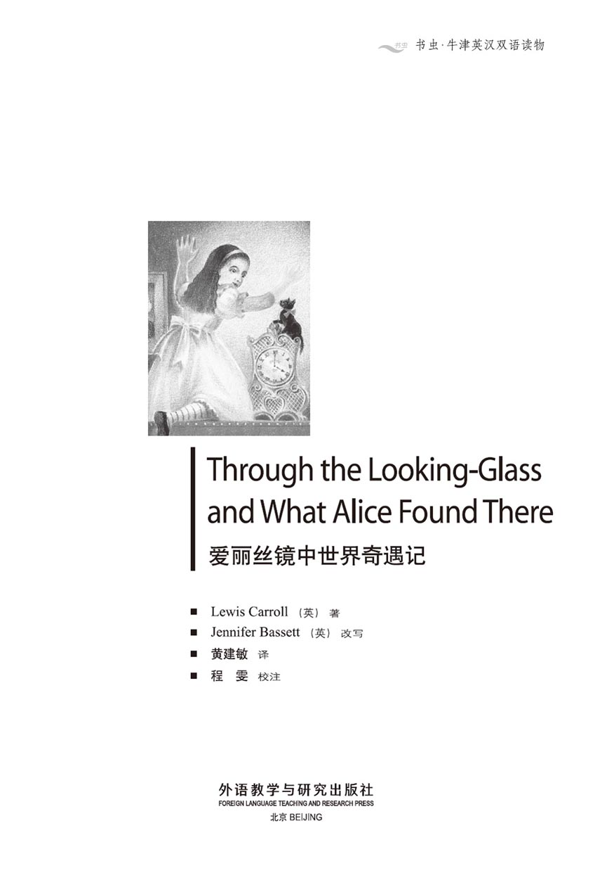
版权页
京权图字01-97-0352
Originally published by Oxford University Press, Great Clarendon Street, Oxford. © 1995
This edition is licensed for sale in the People's Republic of China only and not for export therefrom.
'Oxford' is a registered trademark of Oxford University Press.
只限中华人民共和国境内销售，不包括香港特别行政区、澳门特别行政区及台湾省。不得出口。
图书在版编目（CIP）数据
爱丽丝镜中世界奇遇记 = Through the Looking-Glass and What Alice Found There／（英）卡罗尔（Carroll, L.）著；（英）巴西特（Bassett, J.）改写；黄建敏译．—北京：外语教学与研究出版社，1997.8（2014.10 重印）
（书虫·牛津英汉双语读物）
ISBN 978-7-5600-1338-1
Ⅰ．爱… Ⅱ．①卡…②巴…③黄… Ⅲ．小说—对照读物—英、汉 Ⅳ．H319.4：I
中国版本图书馆CIP数据核字（97）第22135号
出版人： 蔡剑峰
责任编辑：臧庆凤
出版发行：外语教学与研究出版社
社 址：北京市西三环北路19号（100089）
网 址：http://www.fltrp.com
版 次：1998年1月第1版
书 号：ISBN 978-7-5600-1338-1
* * *
凡侵权、盗版书籍线索，请联系我社法律事务部
举报电话：（010）88817519
电子邮箱：banquan@fltrp.com
法律顾问：立方律师事务所 刘旭东律师
中咨律师事务所 殷 斌律师
简介
简 介
红方王后对爱丽丝说：“你可以充当白方王后前面的卒。卒第一步走两格。然后，你可以飞快地通过第三格——可能乘火车。到了第四格，你会碰见特威丹、特威帝孪生兄弟。第五格大部分是水，第六格则是矮胖子的地盘。第七格全是森林——马将做你的向导。”
进入第八格，爱丽丝将变为王后。象棋可真是奇特的游戏！在镜中世界里，所有的象棋子儿都与你争吵；你得跑得飞快才能留在同一个地方。在这儿，时光倒转，白方王后忘不了两星期以后要发生的事情。
这到底是谁的梦境？是爱丽丝的，还是她只是红方国王梦境中的一个角色？如果是这样，红方国王一旦醒来，又会有什么事发生呢？
作者刘易斯·卡罗尔（真名为查尔斯·道奇森）出生于1832年，于1898年逝世。他曾是牛津大学的数学教师。他为现实生活中一个名叫爱丽丝·利德尔的小女孩写了《爱丽丝漫游奇境记》、《爱丽丝镜中世界奇遇记》两本书，它们是儿童读物中的名著。
目录
1．Looking-glass house
1
Looking-glass house
One thing was certain, it was the black kitten that began it all. The white kitten had been unable to do anything for the last quarter of an hour, because the old cat was washing its face, very slowly and very carefully.
But the black kitten was free to do what it wanted. And so, while Alice was sitting in a corner of the great armchair, half talking to herself and half asleep, the kitten was playing a grand game with a ball of wool. Soon the wool was lying in a terrible tangle all over the carpet, with the kitten running after its own tail in the middle.
'Oh, you bad little thing!' cried Alice, when she saw the wool. She picked up the kitten and climbed back into the armchair. 'You really mustn't play with the wool, you know. It will take me so long to roll the ball up again. Why don't you play chess instead, Kitty? When I was playing a while ago, you were watching me so carefully. In fact, you look just like the Red Queen yourself.'
And Alice picked up the Red Queen from the chessmen on the table, and held it up to show the kitten. But the kitten tried to escape, and, to punish it, Alice lifted it up to the looking-glass above the fireplace. 'If you're not good, Kitty,' she said, 'I'll put you through into looking-glass house. How would you like that?
'I do wonder,' Alice went on, 'if everything in that room is the same as in our room. The things that I can see look the same ― except the books, because the words go the wrong way. But perhaps the rest of the house is really different and full of interesting things. Oh, I wish we could get through, Kitty! Let's pretend we can. Let's pretend the glass has gone soft and... Why, I do believe it has! It's turning into a kind of cloud...'
Alice did not know how it happened, but while she was speaking, she found herself climbing up to the looking-glass. And the glass was beginning to disappear, just like a bright silvery cloud.
In another moment Alice was through the glass and had jumped down into the looking-glass room. At once she began looking around and noticed that several things were very different from the old room. The pictures on the wall all seemed to be alive, and the clock above the fireplace had the face of a little old man, who smiled at her.
'This room isn't as tidy as the other one,' Alice thought to herself, as she noticed several chessmen on the floor by the fireplace. But the next moment, with a little 'Oh!' of surprise, she was down on the floor herself, watching them.
The chessmen were walking around, arm in arm!
'Here are the Red King and the Red Queen, 'Alice said, in a whisper, in order not to frighten them. 'And there are two Castles walking together. And two of the Pawns, and a white Bishop reading a newspaper... I don't think they can hear me or see me,' she went on. 'I wonder ―'
Then something on the table behind her made a noise. Alice turned to look and saw that one of the White Pawns had fallen over and begun to cry. She watched it with interest.
'It is the voice of my child!' cried the White Queen by the fireplace. 'My dear Lily! My sweet child!' and she began to climb wildly up the table leg.
Poor little Lily was now screaming loudly. Alice wanted to be helpful, so she picked up the Queen and put her on the table next to her noisy little daughter.
The Queen sat very still, with her mouth open, for almost a minute. Then she called down to the White King, who was still on the floor by the fireplace. 'Be careful of the storm!'
'What storm?' said the King, looking round worriedly.
'There's a terrible wind ― it blew me up here in a second. You come up the usual way, and be careful!'
Alice watched as the White King slowly began to climb the table leg. Then she said, 'It will take you hours to get up. Why don't I help you?' Gently, she picked him up and moved him slowly upwards. The King was very surprised indeed. His eyes and his mouth got larger and larger, and rounder and rounder. Alice nearly dropped him because she was laughing so much.
When she put him down on the table, he immediately fell flat on his back and lay still. But after a while he sat up, and spoke to the Queen in a frightened whisper.
'I tell you, my dear, I turned cold to the very ends of my hair! I shall never, never forget that moment.'
'You will,' the Queen said, 'if you don't write it down.'
Alice watched with interest as the King took out a very large notebook and began writing. Then she saw a book lying on the table near her, and began to turn the pages.
'It's all in some language that I don't know.' she said to herself. It was like this.
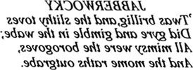
Puzzled, she looked at it for some time, then suddenly understood. 'Of course, it's a looking-glass book! If I hold it up to the glass, the words will go the right way again.'
This was the poem that Alice read.
JABBERWOCKY
'Twas brillig, and the slithy toves
Did gyre and gimble in the wabe;
All mimsy were the borogoves,
And the mome raths outgrabe.
'It seems very pretty,' Alice said, 'but a little hard to understand.'(Actually, she didn't understand a word of it, but didn't like to say so.) 'It seems to fill my head with ideas ― but I don't know what they are!'
Then she suddenly jumped up, as another idea came to her. 'If I don't hurry, I shall have to go back through the looking-glass before I've seen the rest of the house, and the garden. I'll look at the garden first, I think.'
In a moment she was out of the room and running down the stairs. But it wasn't really running, because she was moving gently through the air and her feet weren't touching the stairs at all. At the bottom she managed to catch hold of the door-post, and after that she was pleased to find herself walking again in a natural way.
Looking-glass n. a mirror. 镜子，镜子屋其实是指爱丽丝迷离的梦境。
certain adj. sure. 确实的。
kitten n. a young cat. 小猫。
grand adj. very pleasant, delightful. 有趣的，开心的。
tangle n. a confused mass. 乱糟糟的线团。
chess n. a game for 2 players each of whom starts with 16 pieces (chessmen) which can be moved according to fixed rules across a chessboard in an attempt to trap the opponent's king. 国际象棋；One plays a game of chess on a board （棋盘）, using chessmen or pieces （棋子）, There are either black or where （黑棋或白棋）, and are called king （国王）, queen （王后）, bishop （相）, knight （马）, castle （车） and pawn （卒），但本书中分红棋与白棋。
chessmen n. pieces o f chess. 棋子。
fireplace n. hearth, the opening for a fire in a room. 壁炉。
put you through into the looking glass house lead you break the surface of the mirror and enter the house. 让你穿透镜子进入镜子屋。
go the wrong way be not in its usual order. 方向倒错。
arm in arm with the arm of one person being passed through the bent arm of the other. 手挽手；hand in hand 手拉手。
whisper vi. to speak using the breath. 耳语，轻声说（对别人讲）。
Castle n. One of the powerful pieces. 车。
Pawn n. One of the 8 smallest and least valuable of a player's pieces. 卒。
Bishop n. a piece that can be moved any number of squares from one corner towards the opposite corner. 象，相。
fall over fall to the ground. 跌倒。
Lily n. (kinds of) plant growing from a bulb. 百合。这里是白方王后孩子的名字。
scream vi. to cry out loudly on a high note. 尖叫。
worriedly adv. anxiously. 焦虑地。
blow sb. up to cause sb. to move into the air. 被风吹到天上去。
gently adv. lightly. 轻轻地。
be surprised experience sth. sudden or unexpected. 感到吃惊，惊奇。
immediately adv. at once. 马上，即刻。
flat adj. parallel with the ground. 平面的。
on one's back adv. lying with face upward. 仰卧地，四脚朝天地。
turn cold to the very ends of my hair be much afraid. 吓得直竖毛发，毛骨悚然。
puzzled adv. being at a loss. 迷惑不解地。
Jabberwocky：作者造的字，一般认为是一种怪物。本诗一般称作nonsense verse（打油诗），为英国的一种文字游戏，在可解与不可解之间。
before before在这里不作“在……之前”讲，本句貌似肯定，其实是否定。before似可作when... not解。
in a moment soon. 过不多久。
door-post n. upright post, part of a frame. 门柱。
in a natural way in a usual way 以惯常的方式。
镜子屋
1．镜子屋
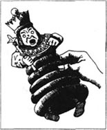
小黑猫是这个故事的缘起，这是肯定的。小白猫什么事也干不了，因为，过去的一刻钟，老猫一直在慢悠悠地仔细地给它洗脸。
相反，小黑猫却自由自在。爱丽丝坐在一张大扶手椅里，自言自语，睡意矇眬，就在这当儿，小黑猫逗着一个毛线团儿，玩得正开心。过不多时，整个地毯上全是乱糟糟的毛线，小黑猫在中间追着自己的尾巴跑。
爱丽丝看见毛线，叫了声“你这个小淘气！”她提起小黑猫，重又回到扶手椅上。接着又说：“你真不应该追着线团儿玩。要把它绕好，我要费多大功夫呀！小猫儿，干吗不下下棋？刚才我下棋，你一直在用心看我。其实，你外表活像红方王后。”
爱丽丝从桌上棋子儿里拿了红方王后，举在空中给小黑猫看。但猫儿挣脱着想逃跑，爱丽丝就把它提到壁炉上方的镜子前，以示惩罚，并说：“猫儿，如果你不乖，我就让你穿透镜子，把你放到镜子屋去。你意下如何？”
爱丽丝继续说：“我的确不知道那儿房间的摆设是否跟我们这儿的一个样子，我看得见的东西外形都没有什么两样——只是书不同，因为字的方向错了。可能屋子的其他方面确有差别，而且有许多好玩的东西。小猫，我们能到那儿去该多好！我们装作可以进到里面去。假设玻璃软化了……化作了一团云……我真的信以为真了呢！”
爱丽丝不明白这是怎么回事，但正在她说话的当儿，她发现自己正在往镜子上爬，镜子开始消失，就像银光闪闪的一朵云。
片刻之后，爱丽丝钻入镜子，跳进了镜子屋。她马上环顾四周，注意到有好几件东西与刚才的迥然相异。墙壁上的画中物都会动，活生生的，壁炉上方的闹钟像小老头的脸，向她微笑。
爱丽丝看见壁炉边地板上散落了几个棋子，想着，“这个房间没有刚才的整洁。”随后她发出了“哦”的一小声惊叹，坐在了地板上看着这些棋子。
这些棋子儿手挽着手四处走动！
为了不使他们害怕，爱丽丝轻声说：“红方国王与王后都在这儿，还有两枚车并排走，两枚卒子，还有一枚白相在读报……我想他们既听不见我，也看不见我。”她接着说，“我不清楚——”
随后，她身后的桌子上传来响声。爱丽丝转身瞧了瞧，看见一只白卒在桌上摔了一跤，哭了起来。她端详着，感到很有意思。
白方王后站在壁炉边，叫道：“那是我孩子的哭声！我可爱的百合！我的心肝宝贝！”然后拼命顺着桌腿往上爬。
可怜的小百合这时哭喊得更响亮了。爱丽丝想帮点忙。她提起王后，把她放在她乱喊乱叫的小女儿旁边。
王后坐在那儿，一动不动，张着嘴，持续了大约一分钟。然后她叫底下的白方国王：“当心风暴！”他还在壁炉旁边的地板上。
“什么风暴？”国王不安地四处环顾，问道。
“有一阵极其猛烈的风——一眨眼功夫，就把我吹到了这儿来。你还是走原路，千万当心！”
白方国王开始缓慢地往桌腿上爬，爱丽丝观望着。然后她说：“你爬上桌面得费几小时，为什么我不帮帮你呢？”她轻轻地把国王拎了起来，慢慢地往上移动。国王真是吃惊不小。眼睛、嘴巴张得越来越大，越来越圆。爱丽丝开怀大笑，差点儿松了手。
她把国王放到了桌面上。他马上仰面平躺，一动不动。可是过了会儿，他坐了起来，受惊地轻声对王后说：
“亲爱的，我确实吓死了！那片刻我永世也难忘。”
王后说：“如果你不记下来，肯定会忘记的。”
爱丽丝饶有兴趣地看着国王掏出了一本超大号笔记本并开始在上面写东西。她还看见旁边一张桌子上放着书，就随手翻了起来。
她自言自语道：“用的语言我一点都不懂。”其中有一首诗是这样写的：
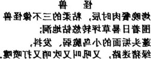
她看了一会儿，开始迷惑不解，随后茅塞顿开。“当然，这是本镜子世界的书！把它放在镜子前面，词儿就会恢复到正确的顺序上来。”
下面是爱丽丝读到的诗：
怪 兽
烤晚餐肉时辰，粘柔的三不像怪兽
围着日晷草坪转悠钻地洞；
蓬头垢面的小鸟脆弱、发抖，
绿猪迷路，又吼叫又吹哨又打喷嚏。
爱丽丝说：“看起来是首好诗，但有点儿费解。”（其实，她一个字都不懂，但不愿意这么讲。）“这首诗好像把很多思想塞进了我的脑子，但那到底是些什么思想，又糊里糊涂！”
说完，她突然跳了一下，另一个想法来到了心头。“如果我不赶紧点，就得穿过镜子走回去了。这样我就看不见镜子屋的其他地方，以及那个花园。我想还是先看看花园吧。”
不一会儿，她就出了房间往楼下跑。其实那不是真跑，因为她是在空气中轻轻地飘过，双足一点儿也没有触到楼梯。到了底层她握住门柱，之后她很高兴地发现她又能正常地走路了。
2．The garden of live flowers
2
The garden of live flowers
There was a small hill not far away and Alice decided to walk to it. 'I shall be able to see the garden better from the top of the hill,' she said.
She tried very hard to reach the hill, but it seemed impossible to get to it. She went first this way, then that way, but every time she turned a corner, she found herself back at the house.
'I'm not going in again yet,' she told the house crossly. 'I'll have to go back through the looking-glass into the old room and that's the end of all my adventures then!'
She tried once more, and this time passed a large flowerbed, with a tree growing in the middle.
'Oh Tiger-lily,' Alice said to one of the flowers, 'I wish you could talk!'
'We can talk,' said the Tiger-lily, 'if there is anybody interesting enough to talk to.' For a minute Alice was too surprised to speak. Then she said, almost in a whisper, 'And can all the flowers talk?'
'As well as you can,' said the Tiger-lily. 'And a lot louder.'
'It isn't polite for us to begin, you know,' said the Rose, 'and I was really wondering when you would speak.'
'But why can you all talk?' Alice said, puzzled. 'I've been in many gardens before, and none of the flowers could talk.'
'Put your hand down and feel the ground,' said the Tiger-lily. 'Then you'll know why.'
Alice did so. 'It's very hard,' she said, 'but how does that explain it?'
'In most gardens,' the Tiger-lily said, 'they make the flowerbeds too soft ― so the flowers are always asleep.'
This sounded a very good reason to Alice. 'I never thought of that before!' she said.
'Do you ever think at all?' asked the Rose, unkindly.
'I never saw anybody with a more stupid face,' said a Daisy suddenly. It was the first time it had spoken, and Alice jumped in surprise.
'Oh, be quiet!' cried the Tiger-lily. 'What do you Daisies know about the world?'
'Are there any other people in the garden?' Alice asked.
'There's one other flower that can move around like you,' said the Rose. 'She's the same strange shape as you, but she's redder, with more leaves than you have.'
'She's coming now!' cried another Daisy. 'I can hear her feet ― bang, bang, bang, on the ground.'
Alice looked round quickly, and saw that it was the Red Queen. 'She's grown a lot,' Alice thought. When she had seen her by the fireplace, the Queen had been only eight centimetres high. Now she was taller than Alice herself!
'I think I'll go and meet her,' Alice said.
'You can't possibly do that,' said the Rose. 'You must walk the other way if you want to meet her.'
This sounded nonsense to Alice, so she began to walk towards the Red Queen. To her surprise, she found herself a minute later walking in through the front door of the house. She turned round crossly, and saw the Queen again, on the other side of the garden. This time she tried walking the other way, away from the Queen.
It succeeded beautifully. A minute later she was standing opposite the Red Queen, and very near the hill that she had wanted to get to.
'Where do you come from?' said the Red Queen. 'Where are you going? And why are you here at all? Look up, speak nicely, keep your hands still. And curtsy while you're thinking what to say. It saves time.'
Alice tried to obey all these orders, feeling just a little frightened of the Queen.
'I only wanted to look at the garden, your Majesty, from the top of that hill,' she began.
'Hill!' cried the Queen. 'Some people would call that a valley.'
'But a hill can't be a valley,' said Alice. 'That would be nonsense.'
The Red Queen shook her head. 'You can call it nonsense if you like. Some people would say it was sensible!'
Alice curtsied again, and decided it would be safer not to argue any more. Together, they walked on in silence up the hill. At the top Alice could see right across the country ― and a very strange country it was. There were lots of little brooks running across from side to side, and there were long lines of hedges, going the other way. It was a country of squares.
'It's just like a large chess-board!' Alice said at last. 'Oh, and I can see some chessmen down there!' Her heart began to beat fast with excitement. 'It's a great game of chess, as big as the world itself ― if this is the world at all. Oh, what fun! I wish I could be in it, even as a Pawn. Although I would love to be a Queen, of course.'
She looked a little worriedly at the real Queen as she said this. But the Red Queen smiled kindly, and said, 'You can be the White Queen's Pawn, if you like. Lily is too young to play. You're in the Second Square now, and when you get to the Eighth Square, you'll be a Queen ―'
Just at that moment, they began to run. Alice never did understand how it happened, but she had no time to think about it because they were running so fast.
'Faster! Faster!' cried the Queen, pulling Alice's hand. They ran like the wind, but the strange thing was that they never seemed to pass anything. The trees and other things round them never changed their places at all.
Alice was very puzzled by this, but still the Queen cried, 'Faster! Faster!' Now they were almost flying over the ground. Alice had never run so fast in her life.
When at last they stopped, she had to sit down because her legs were shaking. Then she looked around in surprise.
'But we've been under this same tree all the time! We're still in the same place!'
'Of course we are,' said the Queen. 'Why shouldn't we be?'
'Well, in our country,' said Alice, 'if you run very fast for a long time, you usually arrive at a different place.'
'What a slow kind of country!' said the Queen. 'Here, you see, you have to run very fast, just to keep in the same place. If you want to go somewhere different, you must run twice as fast. Now,' she went on, 'I shall tell you what to do. While I'm speaking, I shall take five steps, and at the fifth step, I shall go.'
She took two steps away from the tree and turned round. 'A pawn goes two squares in its first move. So you'll go very quickly through the Third Square ― by railway, probably. Then you'll be in the Fourth Square, which belongs to Tweedledum and Tweedledee. The Fifth Square is mostly water, and the Sixth belongs to Humpty Dumpty. But why haven't you said anything?'
'I didn't know I had to say anything,' said Alice.
'It's polite,' said the Queen, 'to say thank you for all this information. But never mind. Let's pretend you said it. The Seventh Square is all forest ― one of the Knights will show you the way ― and in the Eighth Square we shall be Queens together, and it's all parties and fun!'
Alice got up and curtsied, and sat down again.
The Queen took another two steps and turned round again. 'Speak in French when you can't think of the English word ― and always remember who you are!'
She took another step, and was gone. Alice did not know if she had disappeared into the air, or run into the wood. But she had certainly gone, and Alice began to remember that she was a Pawn, and that it would soon be time to move.
live 〔laiv〕 adj. alive, living. 活生生的，在这里指花儿像人一样会说话。
corner n. the place where 2 roads meet. 角，拐弯处。
adventure n. a journey that is strange and exciting and often dangerous. 冒险。
flowerbed n. plot of land in which flowers are grown. 花坛，花床。
Tiger-lily n. garden lily with orange flowers spotted with black and purple. 卷丹。
polite adj. having or showing good manners. 有礼貌的，客气的。
feel v. touch. 摸摸看，由触而得知。
unkindly adv. unfriendly. 不友好地。
Daisy n. small white flower with a yellow center, commonly growing wild. 雏菊。
bang adv. burst with a loud noise. 呯呯响。
the other way in the opposite way. 朝相反方向。
beautifully adv. in a beautiful manner. 美好地，完美地。succeed beautifully. 成功得很完美。
nicely adv. kindly, very well. 友好地，相宜地。
curtsy v. make a gesture of respect made by women and girls (e.g. to a queen). 妇女所行的屈膝礼（如对王后所行者）。
your Majesty form used when speaking of or to a sovereign ruler or rulers. 陛下（尤指对君主的称呼）。
sensible adj. reasonable. 有道理的。
argue v. quarrel. 争论，争吵。
brook n. little river. 小河。
hedge n. a line of small trees and bushes growing close together. 树篱笆。
square n. 格（国际象棋中指往前走的步数）。
happen vi. take place. 发生。
over prep. at or to a level higher than, but not touching. 在……之上（但未接触）。
shake vi. tremble or make tremble. 抖动，颤抖。
around adv. on every side. 到处。look around. 环顾。
all the time at all times. 始终。
Tweedledum and Tweedledee a twin who take after each other exactly. 两个长得一样的孪生兄弟。
Humpty Dumpty 本意是身短、腰粗、肩凸的男或女。在儿歌书中，一般把他画成一个很大的圆脸，也就是在一个蛋的轮廓上，加耳、目、口、鼻，再画上很小的身子和四肢，坐在墙头上。爱丽丝在这儿所见的Humpty Dumpty，即由她脑子里所记的这种形象而来。
会说话的花园
2．会说话的花园
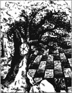
不远处有座小山丘，爱丽丝决定步行到那边去，她说：“站在山顶上，我可以把花园看得清楚些。”
为了到那山去，她做了各种努力，但要到那儿，似乎是不可能的。她先走这条路，然后走那条路，但每次一拐弯，她发现自己又回到出发前的那所房子。
“我现在还不想进去，”她望着房子，生气地说，“我得再次穿过镜子，回到那老房间去，那么，我的探险可就全完结了。”
她又重试了一次。这次她经过了一个大花坛，中间长了一棵树。
爱丽丝对其中一株花说：“是卷丹，你能讲话该多好！”
卷丹答道：“我们会讲话的，只要是同我们讲话的人有趣儿。”爱丽丝顿时惊异得哑口无言。然后，她压低声音问：“这儿所有的花儿都会讲话吗？”
卷丹答道：“不会讲得比你差，而且声音还要洪亮得多。”
玫瑰说：“我们先开口就失礼了，我很想知道你什么时候愿意讲话。”
爱丽丝迷惑不解，问：“但你们怎么都会讲话的？我到过不少花园，花儿都不会讲话。”
卷丹答道：“把手放下来摸摸大地，你就会明白了。”
爱丽丝照办了，接着说：“地很坚硬，但这能说明什么问题呢？”
卷丹答道：“大多数花坛地太软，花儿总是昏昏欲睡。”
爱丽丝觉得这倒很有道理，她说：“我从未想到这一点。”
玫瑰不留情面地问了句：“你曾经用脑筋想过？”
雏菊也冲出了一句：“这脸蛋是我所看见过的最傻里傻气的。”爱丽丝诧异得跳了起来，这是雏菊第一次讲话。
卷丹叫了声：“别胡说！你们雏菊对这世界了解多少？”
爱丽丝问：“园中还有其他人吗？”
玫瑰答道：“还有另外一种花，像你一样能自由走动。她的外形跟你一样奇特，但她更红，比你多些树叶。”
另一株雏菊喊了起来：“现在她来了！我听得见她呯呯的脚步声。”
爱丽丝马上看了看周围，原来是红方王后。她想：“她长高了不少。”那次在壁炉边看见王后时，她只有8厘米高，而今竟比爱丽丝还高些。
爱丽丝说：“我想我还是去见见她。”
玫瑰说：“这你办不到。你要见她，就必须朝反方向走。”
在爱丽丝听来，这似乎是无稽之谈，于是她开始朝红方王后走过去。令她惊讶的是，一分钟后，她发现自己又踏进那幢房子的正门。她气恼地转过身来，又瞧见王后在花园的另一头。这次，她试着朝远离王后的方向走。
这次她终于完满地成功了。片刻之后，她站到了王后的对面，并且离她要去的那座小山丘已经很近了。
红方王后问：“你从哪里来？要到哪里去？你来这儿究竟干什么？讲话要抬头，要有礼貌，手要放好。在考虑下一句该讲什么时，行个屈膝礼。这样会节省时间。”
爱丽丝试图遵循这些命令，但内心还是有点儿害怕王后。
她开了口：“王后陛下，我只是想站在山顶看看底下的花园。”
“山！有人称那为峡谷。”王后高喊了一句。
爱丽丝应了声：“但山决不会是峡谷。这是无稽之谈。”
王后摇了摇头，“你可以把这种讲法称作无稽之谈，但有人却认为很有道理。”
爱丽丝又行了一个礼，拿定主意还是别争辩的好。她们双双一言不发地上了山。从山顶，爱丽丝可以俯瞰整个原野，这真是片奇特的原野。有条条小溪与排排的小树林，在其间纵横交错。整个原野被分割成一个个方块格子。
爱丽丝最后说：“多像一个大棋盘！啊，我还看见了那儿站着些棋子呐！”她激动得心怦怦直跳，“这是一场大型的象棋游戏。如果世界就在我们眼前，那么它就跟整个世界一样大。啊，多有趣！真希望我能在那里面，做一个小卒也行。当然，我更喜欢当一个王后。”
讲到这里，她有点不安地看了眼真正的王后。可是，红方王后好心地微笑着说：“如果你愿意，你可以做白方王后前面的卒子。百合太小，玩不了棋。现在你站在第二格，当你走到第八格时，就变为王后了——”
话音刚落，两个就开始跑起来。爱丽丝还摸不着头脑这是怎么一回事。但是她们跑得太快了，没有时间去考虑这个问题。
王后拉着爱丽丝的手，叫喊着：“跑快点！快点！”她们像一阵风似地跑过，但奇怪的是，她们似乎从未把什么景物甩在后面。两边的树木及周围其他物体根本没有改变位置。
爱丽丝很纳闷，但王后还是喊叫着：“跑快点！快点！”这时她们几乎是足不着地向前飞着。爱丽丝从没有跑得这么快过。
她们终于停住，爱丽丝双腿颤抖得厉害，不得不坐下来。她惊奇地环顾四周。
“但我们一直是在同一棵树下！我们仍然在同一个地方。”
王后说：“那当然，这有什么不对？”
“但在我们那地方，假如你快速地跑了很久，一般会跑到另一个地方去。”爱丽丝说。
王后却说：“你那地方可真‘慢’！在我们这儿，要保持原地不动，你得跑得飞快。如果你要到别处去，至少得跑刚才两倍的速度。”她又接着说，“我这就告诉你怎么个走法。在我讲话的同时，我将迈出五步，到了第五步，我就走了。”
她从那棵树迈出两步，然后转过身来。“卒子第一步走两格。然后你可以飞快地通过第三格——可能乘火车。然后你就进入了第四格，这是特威丹、特威帝孪生兄弟的地方。第五格大部分是水，第六格则是矮胖子的地盘。你怎么一言不发？”
“我不清楚我还得讲话。”爱丽丝答道。
王后说：“告诉你这么多详情，道声感谢就显得礼貌。不过没关系。就当你讲过了吧。第七格全是森林——马将做你的向导——到了第八格，我们就都是王后了，那时我们有享受不完的欢乐时光！”
爱丽丝起立行了个礼，又坐了下去。
王后又迈了两步，再次回过头来，说：“想不起英文词儿就用法文来表达——永远别忘了自己的身份！”
她又迈了一步，就不见了。爱丽丝不清楚王后是飞上了天还是跑进了树林。但她确实是不见了。爱丽丝想起她是一枚卒，不久，她就该走动了。
3．Looking-glass animals
3
Looking-glass animals
Alice stood at the top of the hill and looked down. 'Which way should I go?' she wondered. On one side she could see, a long way away, some kind of large animals walking around. She wasn't sure that she liked the look of them, so she decided to go the other way. She ran down the hill and jumped over the first of the six little brooks.
* * * * *
* * * *
* * * * *
'Tickets, please!' said the Ticket Inspector, putting his head in at the window. In a moment everybody was holding out a ticket; the tickets were almost as big as the people, and seemed to fill the train.
'Show your ticket, child!' the Inspector went on, looking angrily at Alice. And then several voices said all together, 'Don't keep him waiting, child! His time costs a thousand pounds a minute!'
'I'm afraid I haven't got a ticket,' Alice said in a frightened voice. 'There wasn't a ticket-office where I came from.'
'Why didn't you buy one from the engine-driver?' said the Inspector. And again the voices said, 'The engine-driver's time costs a thousand pounds a minute!'
The Inspector looked at Alice first through his glasses, then over the top of them. Then he said, 'You're travelling the wrong way,' and shut up the window and went away.
'She ought to know which way she's going,' said the gentleman sitting opposite Alice (he was dressed in white paper), 'but perhaps she doesn't know her own name.'
A Goat, that was sitting next to the gentleman in white, said loudly, 'She ought to know her way to the ticket-office, but perhaps she can't read or write.'
There was a Beetle next to the Goat, and he had something to say about Alice as well. Then other voices spoke, but Alice could not see who they were. One voice sounded like a horse, she thought. And then a very small voice, right next to her ear, said, 'You could make a poem out of that ― something about "a horse, of course".'
The gentleman in white paper spoke again. 'Don't worry, my dear,' he whispered. 'Just buy a return ticket every time the train stops.'
'No, I won't!' Alice said crossly. 'I don't belong to this railway journey at all. I was in a wood just now, and I wish I could get back there.'
Then she heard the little voice again. She looked round, but could see nothing. 'I know you are a friend,' the voice said in her ear, 'a dear friend. And you won't hurt me, although I am an insect.'
'What kind of insect?' Alice asked, a little worried. But just then there came a long scream from the engine, and everybody jumped up. The Horse put his head out of the window, then pulled it back in and said calmly, 'It's only a brook that we have to jump across.'
Alice did not like the idea of trains jumping brooks. 'But we'll get into the Fourth Square, I suppose,' she said to herself. In another moment she felt the train go straight up into the air. Frightened, she caught at the thing nearest to her hand, which happened to be the Goat's beard.
* * * * *
* * * *
* * * * *
But the beard seemed to disappear as she touched it, and she found herself sitting quietly under a tree. There was an Insect sitting near her, on a low branch of the tree.
It was a very large insect indeed ― almost as big as a chicken. Alice thought.
'So you don't like all insects?' the Insect said, quietly continuing their conversation.
'I like them when they can talk,' Alice said. 'None of them ever talk, where I come from. But everything here is so different. I probably don't even know the names of the insects here.'
'Can you remember your own name?' asked the Insect.
'Of course,' said Alice. 'Nobody forgets their own name.'
'Don't they?' said the Insect. 'There's a wood down there, for example, where things have no names.'
Alice looked round, and saw a dark wood on the other side of an open field. When she looked back, the Insect had flown away. She got up and began to walk across the field. 'This must be the way to the Eighth Square,' she thought, 'but I hope I don't lose my name in this wood.'
She soon reached the wood and was pleased to get out of the hot sun and into the shadows under the trees. 'How nice and cool it is in here, under the... under the... under the what?' she said, surprised that she could not think of the word. She put her hand on a tree. 'What does it call itself? I do believe it's got no name!'
She stood for a moment, thinking. 'And now, who am I? I will remember, if I can.' She tried and tried, but she just could not remember her name. It began with an 'L'，she thought, but she wasn't really sure.
So she hurried on through the wood, hoping to get to the other side quickly, and after a while she came out into another open field. She stopped, and thought hard. 'Why, it's Alice, of course!' she said. 'My name's Alice ― I won't forget it again. And now, which way should I go?'
It was not a difficult question to answer. There was only one road, and a large signpost, which said:
TO TWEEDLEDUM'S HOUSE
TO THE HOUSE OF TWEEDLEDEE
I'll just call in and say hello, Alice said, and ask them the way to the Eighth Square. I would like to get there before it gets dark.' So she walked on, talking to herself as she went. After a long time the road came into another wood and suddenly turned a corner, and there in front of her Alice saw two fat little men standing under a tree.
look n. appearance. 外貌。
Ticket Inspector person who inspects tickets. 检票员。
frightened adj. in a state of fear. 恐惧的。
ticket office n. a place where tickets are sold. 票房，售票处。
engine-driver n. the driver of a train. 火车司机。
over the top of 从……上方。
ought to should. 应该。
opposite prep. in front of. 面对面。
goat n. small, active horned animal. 山羊。
beetle n. a kind of insect, with hard, shiny wings. 甲壳虫。
as well also, too. 也。
return ticket a ticket for the journey going back. 回程车票。
insect n. a very small kind of animal with six legs, e.g. a fly. 昆虫。
calmly adv. quietly. 平静地。
suppose vi. think. 想。
beard n. the hair on the face below the mouth. 下巴上的胡子，髯。
not... all 一般指部分否定，按照上下文，这里似指全部否定，相当于none。
an open field a piece of field in the forest without plants. 开阔地。
reach vt. get to. 抵达。
do believe really believe. 确实相信，do起强调动词作用。
believe v. to think that something is real or true. 相信。
why 语气词，没有“为什么”的意思。
signpost n. a board on the road to direct the may with words or signs. 路标。
call in call on sb. in the house. 登门拜访。
镜中动物
3．镜中动物
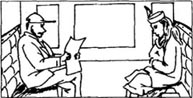
爱丽丝站在山顶上向下面看。她心里纳闷：“我该走哪条路？”在很远的一边，她能够看见某种庞大的动物四处走动。很难说她喜爱它们的外貌。于是她决定走另外一条路。她跑步下山，跳过六条小溪中的第一条。
* * * * *
* * * *
* * * * *
“请出示车票！”检票员把头伸进窗户大声嚷嚷。片刻之后，每个乘客都拿出了车票；车票几乎与人一样大，似乎把整个火车都给塞满了。
“孩子，出示你的车票！”检票员面带怒色看着爱丽丝又讲了一句。紧接着有好几个声音同时说道：“孩子，别让他久等了！他每分钟值1000英镑。”
爱丽丝带着惊恐的声音说：“我恐怕没有车票。我来的那个地方没有票房。”
检票员说：“你怎么不向机车司机买张票。”许多声音又在说：“机车司机的每分钟值1000英镑。”
检票员先透过眼镜看爱丽丝，然后又从眼镜上面看了看她，说：“你乘车方向反了。”随后关上窗户就走了。
坐在爱丽丝对面的先生（他的衣裤是用白纸做成的）说：“她应该清楚方向的，但她可能连自己的名字都不知道。”
坐在白衣先生旁边的一只山羊大声嚷嚷道：“她应该知道去票房的路的，不过可能她是个文盲吧。”
坐在山羊边上的是只甲壳虫，他也要说爱丽丝几句。然后还有其他的声音，但爱丽丝看不清楚到底是谁，她想其中有一个声音好像是马发出的。随后有一个很细微的声音凑着她的耳朵讲：“你可以根据那个编一首诗，内容当然是一匹马的故事。”
穿一身白纸的先生又说：“小宝贝，别着急。”他低声说，“火车每停一站就买张回程票。”
爱丽丝生气地应声道：“不，我不买！我根本不属于这次列车。刚才我还在树林里，我希望能回去。”
然后她又听见那个细微的声音。她看了看周围，但什么也没有。“我知道你是个朋友，一个亲爱的朋友。我是只昆虫，你不会伤害我吧。”声音在她耳边响起。
爱丽丝问：“哪一类昆虫？”她有点儿担心。就在同时，火车头长鸣一声，每个人都吓得跳了起来。马向窗外探出了头，然后重又缩回来，平静地说：“只是一条小河，我们得跳过去。”
爱丽丝不喜欢火车跳越小河这个想法。“不过我想我们即将进入第四格。”她自言自语道。过了一会儿，她感觉火车径向空中开去。她惊恐万状，随手抓住离她最近的一个东西，凑巧是山羊的胡子。
* * * * *
* * * *
* * * * *
但她一触到山羊胡子，胡子似乎就失踪了。她发现自己静静地坐在一棵树下。一只昆虫坐在她身旁的低矮的树枝上。
爱丽丝想，这真是只硕大的昆虫——几乎同小鸡一样大。
“这么说你不喜欢昆虫？”那只昆虫问，轻声地继续他们的对话。
爱丽丝答道：“他们能说话，我就喜欢。我来的那地方，没一只昆虫讲过话。但这里什么都不一样。这里的昆虫我可能连名字都叫不上来呢。”
“你记得住自己的名字吗？”昆虫问。
“当然记得，没人会忘记自己的名字。”爱丽丝答道。
“是吗？譬如那边有一片树林，里边的东西就没有名字。”昆虫说道。
爱丽丝环顾四周，看见一个空地的另一边有一片黑树林。她回转头时，昆虫早就飞走了。她站了起来，踏步跨越这片田野。她心里想：“这条路肯定通向第八格，可是我希望我不会把自己的名字丢落在这儿。”
不久她就抵达树林。终于摆脱了烈日烤晒，享受到树阴下的清凉世界，这使她很高兴。“在这儿，在……下，在……下，在什么（？）下，多凉爽啊！”她很奇怪，怎么就是想不起那个词儿。她把手放在树上，问：“它怎样称呼自己的？我确信它是无名无姓的。”
她站了一会儿，想：“那么，我是谁呢？我一定会想起来的。”她想了又想，就是记不起自己的名字。她想自己名字好像是“L”开头，但又难以确定。
因此她快速穿过树林，希望早点到另一边去。过了一会儿，她又来到了一个空地。她停住，拼命地想。“哦，当然是爱丽丝了！”她说，“我叫爱丽丝——我不会再忘了。现在，我该走哪条路？”
回答这问题并不困难。其实只有一条路，边上有一个巨大的路标，上面写着：
前方是特威丹的屋子
前方是特威帝的屋子
“我这就登门问个好，”爱丽丝说道，“然后询问一下去第八格的路。太阳下山前我要赶到那里。”爱丽丝又继续上路了，边走边自言自语，过了许久，脚下的路通到了另一片树林，又急转了个弯。就在前方，爱丽丝看见两个胖墩墩的小人站在树下。
4．Tweedledum and Tweedledee
4
Tweedledum and Tweedledee
Alice knew immediately which one was which, because each had his name on his shirt. They were standing very still, with their arms round each other, and Alice forgot that they were alive. 'They look just like schoolboys,' she said aloud. Then one of them spoke, and Alice jumped in surprise.
'You've begun wrong!' cried the one called Tweedledum. 'The first thing in a visit is to say "How do you do?" and shake hands.' And here the brothers held out the two hands that were free, to shake hands with her.
Alice did not know which hand to shake first, so she took hold of both hands at once. The next moment they were all three dancing round in a circle. This seemed very natural at the time, and Alice was not even surprised to hear music playing.
The two brothers were fat, and soon got tired. 'Four times round is enough for one dance,' Tweedledee said, and they stopped as suddenly as they had begun. Then they stood looking at Alice in silence.
Alice did not know what to say. How do you begin a conversation with people that you have just been dancing with? she wondered.
'I hope you're not too tired?' she said at last.
'Not at all. And thank you very much for asking,' said Tweedledum.
'Very kind of you,' added Tweedledee. 'Do you like poems?'
'Ye-es... well, some poems,' Alice said carefully. 'Would you tell me which road to take out of the wood?'
'What shall I repeat to her?' Tweedledee said to Tweedledum, not noticing Alice's question.
'The Walrus and the Carpenter is the longest,' Tweedledum replied, putting a friendly arm round his brother.
'If it's very long,' Alice said politely, 'would you tell me first which road ―'
Tweedledee smiled gently and began his poem. It was a very long poem indeed ― all about a Walrus and a Carpenter, who went for a walk along, a beach and invited lots of young Oysters to go with them. The Oysters accepted happily.
'Perhaps that wasn't very sensible of them,' Alice said.
Tweedledee only smiled, and continued：
The Walrus and the Carpenter
Walked on a mile or so,
And then they rested on a rock
Conveniently low;
And all the little Oysters stood
And waited in a row.
'The time has come,' the Walrus said,
'To talk of many things;
Of shoes ― and ships ― and sealing-wax―
Of cabbages ― and kings ―
And why the sea is boiling hot —
And whether pigs have wings.'
Alice waited with interest to hear about this conversation, but it never happened, because the Walrus and the Carpenter went on to eat all the Oysters instead.
At the end Alice said, 'I like the Walrus best, because he said he felt sorry for the poor Oysters.'
'He ate more of them than the Carpenter,' said Tweedledee. 'He ate faster, you see.'
'Oh!' said Alice. 'Well then, I like the Carpenter best.'
'But he ate as many as he could get,' said Tweedledum.
'Well, they were both very unkind ―' Alice began, then stopped when she heard a noise in the wood. It sounded like a wild animal. 'What's that?' she asked, afraid.
'It's only the Red King snoring,' said Tweedledee. 'Come and look at him.'
The brothers each took one of Alice's hands and they went through the wood to where the King was sleeping.
'Doesn't he look lovely?' said Tweedledum.
Alice really couldn't agree. The King was lying in a very untidy way, and was snoring loudly.
'He's dreaming now,' said Tweedledee, 'and what do you think he's dreaming about?'
'Nobody can guess that,' said Alice.
'Why, about you!' Tweedledee said. 'And if he stops dreaming about you, where do you think you will be?'
'Where I am now, of course,' said Alice.
'Oh no!' said Tweedledum. 'You'll be nowhere. You're only a kind of thing in his dream! If he wakes up, you'll go out ― bang! ― just like a light!'
'What nonsense!' Alice said crossly. 'And if I'm only a kind of thing in his dream, what are you, I'd like to know.'
'The same!' the brothers cried together.
'Shhh! Don't make so much noise,' Alice said. 'You'll wake him up.'
'How can you wake him,' said Tweedledum, 'when you're only one of the things in his dream? You know very well that you're not real.'
'I am real!' said Alice, and began to cry.
'I don't know why you're crying,' Tweedledee said unkindly. 'You won't become real that way.'
'I know they're talking nonsense,' Alice thought to herself, 'and there really isn't anything to cry about.' She gave herself a little shake, then said, 'I think I must find my way out of the wood now, because it's getting very dark. Do you think it's going to rain?'
'Possibly,' Tweedledum said, opening a large umbrella.
It was now getting very dark indeed and Alice thought there must be a storm coming. 'What a thick black cloud that is!' she said. 'And how fast it comes! Why, I do believe it's got wings!'
'It's the crow!' Tweedledee shouted fearfully. The two brothers turned to run and had disappeared in a moment.
Alice ran too, and hid under some low trees. 'It can't get me under here,' she thought, 'but I wish its wings didn't make so much wind. It's blowing everything around terribly ― and look! Here's somebody's shawl flying through the air!'
hold out stretch. 伸出。
at once in the same time. 同时。
natural a. ordinary, normal. 自然的，正常的。
four times round (dance) four circles. （跳）四圈（舞）。
in silence silently. 静静地。
wonder v. to express a wish to know. 想知道。
poem n. arrangement of words in lines with a regularly repeated accent. 诗。
some adj. certain. 某些
walrus n. large sea-animal (like a very large seal) with two long tusk. 海象。
carpenter n. man whose work is building with wood. 木匠。
oyster n. kinds of shellfish much used as food, usu. eaten uncooked. 牡蛎。
conveniently adv. easily to get to or at. 方便地，容易接近地。
in a row in a line. 坐成排（列）。
sealing-wax kind of wax used to seal letters. 封蜡，火漆。
cabbage n. vegetable whose leaves are closely folded into a round head. 甘蓝菜。
boiling hot as hot as the water reaching its boiling point. 沸水般滚烫。
feel sorry for sb. to feel pity towards sb. 表示同情、怜悯，感到难过。
more than a greater number. 比……更多。
sound v. to have the effect of being, seem when heard. 听起来，似乎（常作比喻用法）。
snore vi. make noisy sounds esp. during sleep. 打呼噜。
lovely adj. beautiful, pleasant, esp. to both the heart and the eye. 美丽的，可爱的。
untidy adj. not tidy, being in a mass. 邋遢。
nonsense n. silly or stupid talk or ideas. 废话。talk nonsense 讲废话，胡言乱语。
crossly adv. angrily, bad-temperedly. 生气地，发脾气地。
cry call out loudly in words. 大声说。
umbrella n. an arrangement of cloth over a folding frame with a handle, used for keeping rain off the head. 雨伞。
crow n. a large black bird. 乌鸦。
low tree short tree. 矮树。
get v. catch. 抓住。
shawl n. large piece of material worn about the shoulders or head of a woman, or wrapped round a baby. 披肩，围巾。
特威丹与特威帝
4．特威丹与特威帝
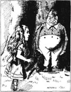
爱丽丝一下子就把这对孪生兄弟辨认出来了，因为衬衫上都标明了名字。他们纹丝不动地站在那儿，手挽着手，爱丽丝因此竟忘了他们是活的。她大声地说：“他们看起来就像小学生。”接着两个中的一个讲话了，爱丽丝惊奇地跳起来。
叫特威丹的那位叫道：“你开头就错了。拜访朋友，第一件事是打招呼‘你好！’同时握手。”这时，俩兄弟伸出了闲着的两只手，与她握手。
爱丽丝搞不清楚要先握哪只手，于是就同时抓住了两只手。随后，他们就围成一个圈跳舞。当时这似乎非常自然，爱丽丝听见音乐奏起，也不感到奇怪。
这俩兄弟长得胖墩墩的，一会儿就疲惫不堪了。特威帝说：“一曲跳四圈就够了。”他们停下来，就像开始时那样突然，然后他们站在那儿，静静地看着爱丽丝。
爱丽丝不知道该说些什么。如何开始同刚刚与你跳过舞的人谈话呢？她拿不准。
她终于开了口，说：“你们很累吗？”
“一点也没有。谢谢你的关心。”特威丹答道。
“你太好了。你喜欢诗歌吗？”特威帝补充说。
爱丽丝非常谨慎地答道：“是……是的，有些诗歌。劳驾你告诉我哪条路可以走出树林？”
“我该给她背诵什么？”特威帝对特威丹说，没有注意到爱丽丝的发问。
特威丹很友好地搂住自己的兄弟，说：“《海象与木匠》这首诗是最长的。”
“如果这首诗很长，劳驾你先告诉我哪条路……”爱丽丝很有礼貌地恳求道。
特威帝微微一笑，就背诵起诗来了。那真是首长诗，讲的是海象与木匠去海边散步，并邀请许多小牡蛎同往。小牡蛎很高兴地接受了邀请。
爱丽丝说：“它们恐怕不太明智吧。”
特威帝只笑了笑，又继续背：
海象与木匠
步行一英里，
要坐岩石上
石头低又矮；
牡蛎站成排
等待又等待。
海象先开言：
“时光已来临，
“谈论许多事：
鞋、船与封蜡——
甘蓝与国王——
大海为何烫——
猪猡有无翼。”
爱丽丝觉得非常有趣，等着听海象与木匠的对话，但就是没声响，因为他们转而忙着吃牡蛎了。
最后爱丽丝说：“我最喜欢海象，因为他说他为可怜的牡蛎感到难过。”
特威帝说：“他比木匠吃得还多，因为他吃得快。”
“哦，是这样。那么我最喜欢木匠。”爱丽丝改口说。
但特威丹说：“其实木匠也在拼命地吃。”
“哦，他们两个都不是什么好人——”爱丽丝刚一出口，就住了口，这时她突然听见树林里传来好像是野兽的吼叫。她害怕了，忙问：“那是什么声音？”
特威帝答道：“那只是红方国王在打呼噜。来，我们去看看他。”
兄弟俩每人拉住爱丽丝的一只手，他们穿过树林，来到国王睡觉的地方。
特威丹问：“他够可爱的，是吧？”
爱丽丝真是不敢苟同。国王躺在那儿，邋里邋遢，呼噜打得山响。
特威帝说：“他在做梦呢。你说他在做什么梦？”
“谁也不会知道的。”爱丽丝答道。
特威帝说：“他在梦见你呢！如果他不再梦见你，你说你会在哪儿？”
爱丽丝答道：“当然还是在这儿。”
“哦，不！你将不在任何地方。你只是他梦中的一种东西！他一醒来，你就出去了——就像一道光！”特威丹说。
爱丽丝生气地说：“一派胡言！如果我只是他梦中的某种东西，那么我倒想知道，你们又是什么呢？”
“同样的东西！”兄弟俩异口同声道。
爱丽丝说：“嘘！别嚷嚷了，否则会把他吵醒的。”
“你只是他梦境中的一件东西，你又怎么能把他吵醒呢？你并不是真实的，这你很清楚。”特威丹说。
爱丽丝说：“我是真实的！”说完就哭了起来。
特威帝不友好地说：“我不明白你为什么哭了。这并不能使你变为真实的。”
爱丽丝思忖着，“我清楚他们在胡言乱语，不过确实没什么好哭的。”她振作了一下，说：“我想眼下我必须要找到走出树林的路。因为天越来越暗了。你认为要下雨了吗？”
“可能的。”特威丹说着，打开了一把大伞。
天空一片漆黑，爱丽丝揣测一定会有场暴风雨。她说：“那云团又密又黑，来势多凶猛！我肯定它长了翅膀。”
特威帝吓得惨叫一声：“那是乌鸦！”两兄弟转身拔腿就跑，一会儿就不见了。
爱丽丝也跑了起来，躲到低矮的树林下面。她想：“我躲在这下面，乌鸦不会抓到我的，但我希望它的翅膀不要刮起太大的风。周围一切都被席卷而去——你瞧！有人的披肩都被卷上了天。”
5．The White Queen
5
The White Queen
She caught the shawl as she spoke, and looked around for the owner. A moment later the White Queen came running wildly through the wood. Alice went to meet her with the shawl.
'I'm pleased I was able to catch it for you,' Alice said, as she helped the Queen to put on her shawl again. 'Am I speaking to the White Queen?' she added politely.
'Yes,' said the Queen, as she pulled helplessly at her shawl. 'Oh dear! I don't know what's the matter with my shawl today. I think it's angry with me. I've pinned it here, and I've pinned it there, but it's just not happy.'
'But it can't go straight, you know, if you pin it all on one side,' Alice said, as she gently put it right for her. 'And I'm afraid your hair is terribly untidy.'
'The hairbrush is lost in it somewhere,' the Queen said unhappily.
Alice carefully took out the brush and pinned up the Queen's hair more tidily. 'There, you look better now,' she said. 'But really you should have a lady's maid.'
'I'd be happy to take you,' the Queen said. 'Twopence a week, and jam every other day.'
'I don't want you to employ me,' Alice said, laughing. 'And I don't like jam.'
'It's very good jam,' said the Queen.
'Well, I don't want any today, thank you.'
'But you can't have jam today,' the Queen said. 'It's jam tomorrow and jam yesterday ― but never jam today.'
'It must be "jam today" sometimes,' Alice argued.
'No, it isn't,' said the Queen. 'It's jam every other day. Today isn't any other day, you know.'
'I don't understand that,' said Alice, very puzzled.
'That's because we live backwards here,' explained the Queen kindly. 'It's always a little difficult at first.'
'Live backwards!' Alice repeated, in great surprise. 'I never heard of anybody doing that.'
'But there's one very useful thing about it,' the Queen went on, 'you can remember things both ways.'
'I only remember things one way,' Alice said. 'I can't remember things before they happen.'
'That's not very useful,' said the Queen. 'I can remember things that happened the week after next. For example, the King's Messenger is in prison now, but he hasn't done anything wrong yet. His crime will come much later.'
'But what happens if there is no crime,' asked Alice, 'and he doesn't do anything wrong at all? That seems a strange way of ―'
At that moment the Queen began to scream very loudly, and to shake her hand around in the air. 'Oh, oh!' she shouted. 'My finger's bleeding! Oh, oh, oh!'
Alice put her hands over her ears. 'What is the matter?' she said, in between the Queen's screams. 'Have you cut your finger?'
'I haven't cut it yet,' the Queen said, 'but I soon shall ― oh, oh, oh!'
'When do you think you will do it?' Alice asked, trying not to laugh.
'When I fasten my shawl again,' the Queen said unhappily, 'one of the pins will come out and ― oh, oh!' As she said the words, one of her shawl pins came undone and she quickly took hold of it, trying to fasten it again.
'Take care!' cried Alice. 'You're holding it wrong!' She tried to help the Queen, but it was too late ― the pin had already gone deep into the Queen's finger.
'That explains the bleeding, you see,' the Queen said to Alice with a smile. 'Now you understand the way things happen here.'
'But why don't you scream now?' Alice asked, holding her hands ready to put over her ears again.
'I've done all the screaming already,' said the Queen. 'Why do it all again?'
'It's very difficult to believe,' Alice said, 'that life can happen backwards.'
'Try to believe something a bit easier,' said the Queen helpfully. 'For example, I'm a hundred and one years old.'
'I can't believe that!' said Alice.
'Can't you?' the Queen said, shaking her head sadly. 'Try again. Put your hands together and shut your eyes.'
Alice laughed. 'There's no use trying,' she said. 'Nobody can believe impossible things.'
'Perhaps you don't work hard enough at it,' said the Queen. 'When I was a child, I worked at it for an hour a day. Why, sometimes I've believed as many as six impossible things before breakfast. There goes my shawl again!'
The pins had come undone again as she spoke, and a sudden wind blew her shawl across a little brook. The Queen went flying after it, and managed to catch it. 'I've got it!' she called happily. 'Now you will see me pin it on again, all by myself.'
'Then I hope your finger is better now?' Alice said very politely, as she crossed the brook after the Queen.
* * * * *
* * * *
* * * * *
'Oh, much better!' cried the Queen, her voice getting higher and higher as she went on. 'Much be-etter! Be-e-e-ter! Be-e-eh!' The last word sounded very like the sound that a sheep makes, and Alice looked at the Queen in surprise.
And indeed, the Queen was now covered in a thick woolly coat, and... Alice closed her eyes, then opened them again. She couldn't understand what had happened at all. The wood had disappeared, and she was in a little dark shop ― and it really was a sheep in front of her, wearing large glasses and sitting calmly on a chair, knitting.
'What do you want to buy?' the Sheep said at last, looking up for a moment from her knitting.
'I'm not sure at the moment,' Alice said gently. 'May I look round first?'
She began to walk round the shop, looking at everything. But every time she looked hard at something, it seemed to move and then appear again a moment later in a different place. So it was difficult to see clearly what was there. She went on walking, and soon realized that the shop was much bigger than she had thought.
'What a strange shop!' Alice said. 'I wish things would keep still!'
A few minutes later the shop became even stranger, because Alice found herself walking beside a large lake, with tall green plants growing round the edge. She put out her hand to pick some, but the plants disappeared when she touched them.
'Oh, what a pity!' said Alice. 'I would like to take some home. They look so pretty.'
'There are lots of other things here,' said the Sheep. 'But you must decide what you want to buy.'
'To buy!' Alice said, jumping a little in surprise. The lake had gone, and she was back in the little dark shop. The Sheep was still knitting, and was looking at her crossly over the top of her glasses.
'I would like to buy an egg, please,' Alice said. 'How much do they cost?'
'Fivepence for one, twopence for two,' the Sheep replied.
'So two are cheaper than one?' Alice said in a surprised voice, taking out her purse.
'But you must eat them both, if you buy two,' said the Sheep.
'Then I'll have one, please,' said Alice, giving the Sheep fivepence.
The Sheep took the money, then said, 'You must get it yourself, you know. It's at the end of the shop.'
The end of the shop was very dark, and was crowded with tables and chairs. Alice could see the egg, but she never seemed to get near it. She almost fell over a chair, and then realized that it was not a chair at all, but a small tree. 'Why are trees growing here?' she wondered. 'This is the strangest shop that I ever saw! And now here's a little brook as well!'
* * * * *
* * * *
* * * * *
So she went on, wondering more and more at every step. After a while everything had turned into a tree, and she thought that the egg would soon do the same.
wildly adv. excitedly, distractedly. 激动地，狂乱地。
helplessly adv. without help. 无助地。
Oh dear! 语气词。哦，我的天哪！
pin vt. to fix sth. with a pin. 用别针固定住。
put... right put sth. in its correct way. 摆弄好。
hairbrush n. kind of brush to make hair tidy. 发刷。
maid n. a woman or girl who works in another person's house. 女佣，侍女。
jam n. a sweet food, made by cooking fruit and sugar. 果酱。
every other day one of every 2 days. 隔天。
employ vt. hire. 雇佣。
live backwards live in a manner that the past is in the front. 往后过生活，即时间倒退。
explain v. make plain or clear. 解释，讲解。
Messenger n. a person who carries message. 信使。
prison n. place where a person is shut up against his will. 监狱。
bleed v. lose blood. 流血。
fasten v. fix. 固定。
undone adj. becoming loose. 松掉，掉下来。
put over cover. 掩盖。
to believe sth. easier 把事情想得简单点。
There goes my shawl again! My shawl is undone again! 我的披肩又松了！
blow across 吹过。
manage to do succeed in doing sth. with efforts. 终于做成功。
thick adj. heavy. 厚厚的。
the wood n. the small forest. 小树林。
knit v. to make (things to wear) by uniting threads into a kind of close network by means of long needles. 织毛活。
look hard look attentively, stare. 盯着看。
keep still remain in its original place. 静心不动。
plant n. a living thing that is not an animal. 植物。
disappear vi. be gone. 失踪。
pence n. pl. form of penny 便士的复数形式，英国货币基本单位为pound（英镑）。一英镑等于100便士。
purse n. a small bag where money etc. is stored. 钱包。
be crowded with be full of. 到处是，充满着。
realize v. to understand and believe. 认知，了解。
(not) at all (not) in any way 根本（不）。
strange adj. unusual. 奇异的，奇怪的。
白方王后
5．白方王后
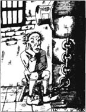
讲话的当儿，她抓住了披肩，四处张望，寻找主人。片刻之后，白方王后穿过树林，飞奔而来。爱丽丝手拿披肩迎上前去。
爱丽丝说：“我很高兴能把围巾抓住。”同时，她给王后重新披上披肩。她又很有礼貌地补充了一句，“我现在是跟白方王后讲话吗？”
王后答道：“是的。”同时徒然地拉了拉披肩，“天哪！我不明白今天我的披肩是怎么回事。我想它在生我的气。我把它别在这儿，又别到那儿，但它就是不满意。”
“你如果把披肩别在一边，它就不可能挺直，这你也清楚。”爱丽丝说着，轻轻地把披肩给她披好。“恐怕你头发也太乱了。”
王后不高兴地说：“发刷不知丢在头发里的什么地方了。”
爱丽丝小心地拿出了发刷，把王后的头发整齐地别起来。“这样看起来就好多了。说真的，你应该有一个侍女。”她说。
王后说：“纳你做侍女，我会很高兴。一周两便士，再加上隔天吃果酱。”
“我不要你来雇我。再说我也不喜欢吃果酱。”爱丽丝说完，笑了起来。
王后说：“那是很好的果酱。”
“我今天一点也不想要，谢谢了。”
王后又说：“但你不可能今天有果酱。只是明天或昨天有果酱——今天决没有果酱。”
爱丽丝争辩说：“有时肯定会‘今天有果酱’的。”
“不会有的。隔天才有果酱。今天不是隔天中的任何一天。”王后说。
爱丽丝摸不着头脑，说：“我真不明白那一套。”
“那是因为在这儿我们往后过日子。要理解这一点起初总是困难的。”王后很友善地解释道。
“往后过日子！”爱丽丝重复了一遍，大吃一惊。“我还从没有听说过有人这样过日子。”
王后又说：“但这样有一点很有用处，你就可以用两种方法记事情了。”
“我只能用一种方法记住事情。我不会记住那些还没有发生过的事情。”爱丽丝说。
王后说：“那可没有好处。我可以记住两周后发生的事情。譬如说，国王的信使现在坐牢了，但他至今还没有做错什么事。他犯罪的时间要晚得多。”
爱丽丝问：“如果他根本没犯罪，没做错事，那又能有什么后果呢？这似乎是用离奇的方式来——”
王后突然大声尖叫起来，并在空中挥舞着手，叫喊着：“哎呀，哎呀！我的手指在流血！哎呀，哎呀，哎呀！”
爱丽丝用双手捂住了耳朵，在王后尖叫的间隙，问：“怎么回事？你割破了手指头？”
“我还没有割破手指，但我不久就会了，哎呀，哎呀，哎呀！”王后说。
爱丽丝问：“你认为什么时候会割破手指？”尽量不笑出声来。
王后不高兴地说：“当我再次系披肩时，一只别针会脱落下来——哎呀，哎呀！”正说着，披肩上的一只别针松了，她快速把它抓住，想重新把它固定住。
爱丽丝喊道：“小心！你抓错了方向！”她想帮王后个忙，但太迟了——别针已经深深地扎进了王后的指头。
王后笑着对爱丽丝讲：“那就解释了流血的事。现在你明白了这儿事情是怎样发生的吧。”
“可是你现在为什么不叫喊？”爱丽丝问，扬起双手准备再次把耳朵捂住。
王后说：“我已经叫喊过了。干吗又要重复一遍呢？”
“事情可以倒过来发生，这真令人难以置信。”爱丽丝说。
王后有意指点她，就说：“设法相信得更容易点。譬如说，我已101岁了。”
“我不相信。”爱丽丝说。
王后沮丧地摇摇头，说：“你怎么不相信？再试试。握起双手并闭上眼睛。”
爱丽丝笑了，说：“试也没用，没人会相信不可能的事。”
王后说：“也许你不够努力。我小时候，每天花一小时来相信不可能的事。有时早餐前共相信多达六件这样的事。我的披肩又松了！”
她说着，别针又松了，一阵风把披肩吹过小溪。王后飞速追了过去，设法抓住了披肩。她高兴地叫起来：“我抓到了！你将看到我重新把它别上，全部自己来。”
爱丽丝非常有礼貌地说：“希望你的手指头好些了。”同时紧随王后跨过了小溪。
* * * * *
* * * *
* * * * *
“噢，好多了！”王后高叫道，她不停地叫着，声音越来越高，“好多——了！好——多——了！好——！”最后一个词听起来就像绵羊在叫唤，爱丽丝不禁惊奇地看了看王后。
一点不假，王后现在身披着一件厚厚的毛外衣。爱丽丝闭上眼睛，然后又睁开。她真的弄不明白到底是怎么回事。树林消失了，她在一家昏暗的小商店里——而且在她面前确实是一只绵羊，戴着大眼镜，静静地坐在椅子上织毛衣。
绵羊终于抬起眼睛问话了：“你要买什么？”
“现在我还拿不准。我可以先看看吗？”爱丽丝轻声轻气地问。
她开始在商店里转悠着，什么东西都浏览一番。但每当她盯着一件东西看，那东西似乎就动起来，过一会儿出现在另一个地方。因此要看清楚那儿有些什么是不容易的。她继续走动，不久就发现那商店比她想的要大得多。
爱丽丝说：“这商店太奇特了！我希望东西摆在那儿不动。”
几分钟后，商店变得更加奇特了，爱丽丝发现自己在一个大湖边散步，湖边长着高大的绿色植物。她伸出手去采摘，但当她一触手，植物就消失了。
爱丽丝说：“太可惜了！我要带些回家，它们看起来多漂亮。”
“本商店还出售许多其他东西，但你必须想好到底买些什么。”绵羊说。
爱丽丝惊奇地跳了一小步，说：“买！”湖消失了，她又回到了那个昏暗的小店。绵羊还在织毛衣，抬眼从眼镜上面愤怒地看了看她。
爱丽丝说：“我想买个鸡蛋。怎么卖？”
“五便士一个，两便士两个。”绵羊答道。
爱丽丝拿出钱包，非常惊奇地说：“这么说，两个比一个要便宜。”
“你要买两个，就得吃两个。”绵羊说。
“那我就买一个。”爱丽丝说着，递给绵羊五便士。
绵羊接了钱，然后说道：“你得自己去拿。就在店面那一头。”
店面那头很暗，摆满了桌椅。爱丽丝看得见鸡蛋，但似乎永远也接近不了。她差点儿倒在了椅子上，却发现那根本不是椅子，而是一棵小树。“树怎么会长在这儿？”她不明白：“这是我看到过的最奇怪的一家商店。而且里面还有一条小溪！”
* * * * *
* * * *
* * * * *
因此她继续走着，每走一步，心里都在想，这到底是怎么一回事。片刻之后，样样东西都变成了树。她想鸡蛋恐怕也会变成树的。
6．Humpty Dumpty
6
Humpty Dumpty
But the egg got larger and larger, and more and more like a person. Then Alice saw that it had eyes and a nose and a mouth, and she realized that it was HUMPTY DUMPTY himself.
'It must be him,' she said to herself. 'There he is, sitting on a high wall, and he looks just like an egg.'
He was sitting very still and seemed to be asleep, so Alice stood and repeated to herself the words of the song:
Humpty Dumpty sat on a wall；
Humpty Dumpty had a great fall.
All the King's horses and all the King's men
Couldn't put Humpty together again.
'Don't stand there talking to yourself,' said Humpty Dumpty suddenly, opening his eyes. 'Tell me your name.'
'My name is Alice ―'
'That's a stupid name!' said Humpty Dumpty. 'What does it mean?'
'Must a name mean something?' Alice asked, puzzled.
'Of course it must,' Humpty Dumpty said with a short laugh. 'My name means the shape I am ― and a very good shape it is, too. With a name like yours, you could be almost any shape.'
'Why do you sit out here all alone?' said Alice, not wishing to argue.
'Because there's nobody with me!' cried Humpty Dumpty. 'Did you think I didn't know the answer to that? Come, let's have some intelligent conversation now.'
Alice tried to think of something intelligent to say, but couldn't. 'What a beautiful belt you're wearing!' she said, suddenly noticing it.
'That's better,' said Humpty Dumpty, looking pleased. 'Yes, it was a present from the White King and Queen. They gave it to me for an unbirthday present.'
Alice looked puzzled. 'What is an unbirthday present?'
'A present when it isn't your birthday, of course.'
Alice thought about this. 'I like birthday presents best,' she said at last.
'You don't know what you're talking about!' cried Humpty Dumpty. 'How many days are there in a year?'
'Three hundred and sixty-five,' said Alice.
'And how many birthdays have you?'
'One.'
'And if you take one from three hundred and sixty-five, what is left?'
'Three hundred and sixty-four, of course.'
'So there's only one day when you can get birthday presents,' said Humpty Dumpty, 'but three hundred and sixty-four days when you can get unbirthday presents! There's success for you!'
'I don't know what you mean by "success",' Alice said.
Humpty Dumpty smiled. 'Of course you don't ― until I tell you. I meant "there's a clever idea for you! " '
'But "success" doesn't mean "a clever idea",' Alice argued.
'When I use a word,' Humpty Dumpty said, looking down his nose at Alice, 'it means just what I choose it to mean ― neither more nor less.'
'But can you make words have different meanings?' asked Alice.
'Words are difficult things, I agree,' said Humpty Dumpty. 'But you have to be strong with them. Give them orders. Tell them to obey you. They must work hard, and do what they're told!' He banged his hand excitedly on the wall as he spoke.
'You seem very clever with words, Sir,' said Alice politely, hoping to calm him. She was worried about him falling off the wall.
Humpty Dumpty looked pleased. 'I can explain most words, and get them to do what I want,' he said. 'Some of them are like suitcases, you know. They've got several meanings packed up in them. Take poems, for example. One short poem can carry as many meanings as five people's luggage.'
'Somebody repeated a poem to me earlier today,' said Alice. 'It was Tweedledee, I think.'
'Oh, I can repeat any number of poems, if you like,' said Humpty Dumpty.
'Well, not just at the moment,' Alice said quickly, hoping to stop him from beginning.
'This piece was written specially for you,' Humpty Dumpty went on, not listening to her. 'It will amuse you.'
'Thank you,' said Alice sadly. She could not refuse to listen, she thought, if the poem was specially written for her.
In winter, when the fields are white,
I sing this song for your delight—
'But I don't sing it,' he explained.
'Yes, I can see that,' Alice said.
'If you can see me singing or not singing, you've better eyes than most people,' said Humpty Dumpty. Alice was silent, and he went on.
In spring, when woods are getting green,
I'll try and tell you what I mean.
'Thank you very much,' said Alice.
In summer, when the days are long,
Perhaps you'll understand the song.
In autumn, when the leaves are brown,
Take pen and ink and write it down.
'I will, if I can remember it so long,' said Alice.
'Don't go on saying things,' Humpty Dumpty said.
'They're not sensible, and I forget where I am.'
I sent a message to the fish；
I told them 'This is what I wish.'
The little fishes of the sea，
They sent an answer back to me.
The little fishes' answer was
'We cannot do it, Sir, because ―'
'I'm afraid I don't understand,' said Alice.
'It gets easier as it goes on,' Humpty Dumpty replied.
But the poem went on for a long time, and Alice thought it got harder, not easier, to understand. Then Humpty Dumpty suddenly stopped, and there was a long silence.
'Is that all?' Alice asked politely.
'That's all,' said Humpty Dumpty. 'Goodbye.'
Alice waited a minute, but Humpty Dumpty closed his eyes and did not speak again. So she got up, said 'goodbye', and quietly walked away.
'What an extraordinary person!' she said to herself as she walked. 'I don't think I ever met ―' She never finished what she was saying, because at that moment a heavy crash shook the forest from end to end.
still adv. without movement. 不动地，静止地。
put... together construct (a whole) by combining parts. 装配。
talk to oneself say to oneself. 自言自语。
shape n. figure. 体形。
all alone not in the company of others. 独自一人。
intelligent a. having, showing intelligence. 明智的。
belt n. a band put around the waist. 腰带。
present n. gift. 礼物。
best adv. most. 最。like best 最喜欢。
at last in the end. 最后。
leave v. remain. 留下，剩余。
look down his nose at 对某人不悦或轻视的意思。
neither... nor not... and not. 既不……也不……。
different a. not the same. 不同的。
obey vt. do what one is told to do. 服从，执行（命令）。
clever a. showing ability and skill. 显示能力和技巧的。
luggage n. bags and their contents taken on a journey. 行李。
repeat v. say (what somebody else has said or what one learnt by heart). 转述，背诵。
amuse v. make time pass pleasantly for. 娱乐，使快乐。
refuse vt. say one will not do. 拒绝。
see v. to understand or recognize. 明白，懂得。
sensible having or showing good sense. 有判断力的，明智的。
reply answer. 回答。
extraordinary adj. very unusual. 非常特别的。
crash n. noise made by a violent fall, blow or breaking. 猛烈的坠落、打击或破裂所发出的响声。
forest n. thick woods. 森林。
胖墩儿
6．胖墩儿
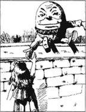
但鸡蛋越变越大，越变越像个人。爱丽丝看见他有眼，有鼻子，有嘴巴。她才知道那原来就是胖墩儿。
她自言自语道：“肯定是他。他就坐在一堵高墙上，外表像个鸡蛋。”
他纹丝不动地坐在那儿，好像是睡着了。爱丽丝就站在那儿，口里背诵着一首歌词：
胖墩儿坐在墙上，
胖墩儿摔下重伤。
国王的骏马、骑士，
再不能将他拼上。
胖墩儿突然睁开眼睛说：“别站在那儿自言自语。告诉我你的名字。”
“我叫爱丽丝——”
胖墩儿说：“那是个蠢名字！是什么意思？”
“名字都得有意思？”爱丽丝不解地问道。
“那当然。”胖墩儿笑了一下，“我的名字说明了我的体形——我的体形多好。像你那个名字，你几乎什么体形都能用。”
爱丽丝不想争辩，就问：“你怎么一个人坐在这儿？”
“那是因为没有人与我在一起！”胖墩儿大声叫道，“你认为我不能回答你那个问题？好了，让我们谈些更明智的话题吧。”
爱丽丝试图想些明智的话题讲讲，但就是想不起来。“你腰上的皮带多漂亮！”她突然发现了这点，就说了。
胖墩儿面有悦色，说：“这话题好多了，这是白方国王与王后送我的礼物，是件非生日礼物。”
爱丽丝迷惑不解，“非生日礼物到底是什么？”
“那当然是你非生日那天送你的礼物。”
爱丽丝想了想，最后说：“我还是喜欢生日礼物。”
“你在讲些什么呀！一年有多少天？”胖墩儿叫嚷道。
爱丽丝说：“365天。”
“其中有多少天是你的生日？”
“一天。”
“那么365天减去1天剩多少？”
“当然是364天。”
胖墩儿便说：“这么讲你只有一天能收到生日礼物。但其他364天都能收到非生日礼物，你就‘成功’了！”
“我不明白你说‘成功’指的是什么？”爱丽丝问。
胖墩儿笑了笑，“我不告诉你，你当然不晓得，我指的是‘给你个聪明的主意！’”
“但‘成功’没有‘聪明主意’的意思呀。”爱丽丝争辩说。
胖墩儿不理会爱丽丝，说：“我用一个词儿，我要它什么意思，那词儿就是什么意思。”
“但你可以叫词儿具有另外的意思吗？”爱丽丝问。
胖墩儿说：“我同意，用词儿是件不容易的事。但你得对它们显示你的威力。给它们发号施令。要它们遵从你。它们必须好好干，对你百依百顺！”他说着，激动地将手重重地在墙上拍了一下。
“你好像对词儿很有些办法，先生。”爱丽丝很有礼貌地说，希望使他平静下来。她担心胖墩儿从墙上摔下来。
胖墩儿面带悦色，说：“我能解释大多数的词儿，并叫它们为我服务。有些词儿像皮箱，里面有好几种意思。譬如诗歌，一首短诗的意思可以像五个人的行李一样丰富。”
爱丽丝说：“今天早些时候，有人给我背诵了首诗。我想那是特威帝吧。”
“哦，只要你想听，我背诵多少首诗都可以。”胖墩儿说。
爱丽丝马上抢着说：“哦，现在不必了。”希望他别开始背。
胖墩儿并不听她，继续说：“这首是专门为你写的。它将给你带来快乐。”
“谢谢！”爱丽丝沮丧地说。她想如果这首诗是专门为她写的，她就不能不洗耳恭听。
冬日里田野白雪皑皑，
我唱起这首歌，只为你开怀——
他解释说：“但我不唱歌。”
“是的，这我看出来了。”爱丽丝应道。
胖墩儿说：“如果你能看出我是否在唱歌，那么你的眼力比大部分人都要好。”爱丽丝沉默着，于是他又背：
春天里树木郁郁葱葱，
我要设法告诉你我的意思。
爱丽丝说：“非常感谢。”
夏日里炎炎日长，
也许你会懂得我的歌唱。
秋天枝叶枯黄，
拿起笔墨永记不忘。
“我会的，如果我能把它长久记住的话。”爱丽丝说。
胖墩儿说：“别说了，你说的话不明智。我忘了讲到哪儿了。”
我给鱼儿捎个信；
告诉它们“这是我的心愿。”
大海里的小鱼儿，
给了我一个回音。
小鱼儿的回音是
“先生，这事我们做不了，因为——”
爱丽丝说：“恐怕我理解不了。”
“越往后听，就变得越简单了。”胖墩儿说。
诗歌又背了好长时间，可是爱丽丝觉得理解起来越来越难，而不是越来越容易了。胖墩儿突然停住，随后是长久的沉默。
爱丽丝客气地问：“背完了？”
“背完了，再见！”胖墩儿答。
爱丽丝等了一会儿，但胖墩儿闭上眼，不再说话。她站了起来，道了“再见”，轻轻地走开了。
“这真是个非常奇特的人！”她一边走，一边自言自语，“我想我从未见过——”但话只讲了半截，因为就在那时，强烈的撞击声震动了整个森林。
7．The Lion and the Unicorn
7
The Lion and the Unicorn
The next moment soldiers came running through the wood, at first in twos and threes, then ten or twenty together, and at last in great crowds that seemed to fill the forest. Alice got behind a tree and watched them go past.
They were very strange soldiers, she thought. They were always falling over something or other, and when one soldier went down, several more always fell over him. Soon the ground was covered with fallen men.
Then came the horses. With four feet, they managed better than the foot-soldiers, but even they fell more often than not. And when a horse fell, the rider always fell off at once. It was almost like a battle in itself, and Alice decided it would be safer to move on. Soon she came to an open place, where she found the White King sitting on the ground, busily writing in his notebook.
'I've sent them all!' the King cried happily when he saw Alice. 'Did you happen to meet any soldiers, my dear, as you came through the wood?'
'Yes, I did,' said Alice. 'Several thousand, I think.'
'Four thousand two hundred and seven,' the King said, looking at his book. 'I couldn't send all the horses, because two of them are wanted in the game. And I haven't sent the Messengers, Haigha and Hatta. I need them myself, of course ― to come and go. One to come, and one to go.'
'I don't think I understand,' said Alice. 'Why one to come and one to go?'
'I've told you,' the King said crossly. 'I must have two ― to fetch and carry. One to fetch, and one to carry.'
At that moment Haigha, one of the Messengers, arrived. He had very large hands and great eyes, which were always moving wildly from side to side.
'What's the news from town?' said the King.
'I'll whisper it,' said Haigha, putting his mouth close to the King's ear.
Alice was sorry about this, because she wanted to hear the news too. But, instead of whispering, Haigha shouted at the top of his voice, 'They're at it again!'
'Do you call that a whisper?' cried the poor King, jumping up and shaking himself. 'Don't do that again!'
'Who are at it again?' Alice asked.
'The Lion and the Unicorn, of course,' said the King.
'Fighting for the crown?'
'Yes, and it's my crown that they're fighting about!' said the King. 'Amusing, isn't it? Let's run and see them.'
They began to run, and as they went, Alice repeated to herself the words of the old song.
The Lion and the Unicorn
were fighting for the crown;
The Lion beat the Unicorn
all round the town.
Some gave them white bread
and some gave them brown;
Some gave them plum-cake
and drummed them out of town.
Soon they saw a great crowd in front of them, and in the middle the Lion and the Unicorn were fighting. Hatta, the other Messenger, was standing at the edge of the crowd, with a cup of tea in one hand and a piece of bread and butter in the other. He looked very unhappy.
'He's only just come out of prison,' Haigha whispered in Alice's ear, 'so he's very hungry and thirsty, you see. How are you, dear child?' he said to Hatta, in a friendly voice.
Hatta looked round, but went on eating his bread and butter and drinking his tea.
'Come, tell us the news!' cried the King. 'How are they getting on with the fight?'
'They're getting on very well,' Hatta said through a mouthful of bread and butter. 'Each of them has been down about eighty-seven times.'
'Then I suppose they'll soon bring the white bread and the brown,' Alice said.
'It's waiting for them now,' said Hatta. 'I'm eating a bit of it myself.'
The fight stopped just then, and the Lion and the Unicorn sat down, looking tired.
The King called out, 'Ten minutes for tea!', and Haigha and Hatta began to carry round plates of white and brown bread. Alice took a piece to taste, but it was very dry.
'I don't think they'll fight any more today,' the King said to Hatta. 'Go and order the drums to begin.'
As Alice watched him go, she suddenly saw somebody running out of the wood.
'Look!' she cried excitedly. 'There's the White Queen! She came flying out of the wood. How fast those Queens can run!'
'There's probably an enemy after her,' said the King, not looking round. 'That wood's full of them.'
'But aren't you going to help her?' asked Alice, very surprised.
'No use, no use!' said the King. 'She runs so terribly quickly. You can't catch a Queen when she's running.'
At that moment the Unicorn came past, with his hands in his pockets. When he saw Alice, he stopped and looked at her for some minutes. He did not seem to like what he saw.
'What ― is ― this?' he said at last.
'This is a child!' Haigha said helpfully, coming forward to introduce Alice. 'We only found it today. It's as large as life, and twice as natural!'
'I always thought they were fantastic monsters,' said the Unicorn. 'Is it alive?'
'It can talk,' said Haigha.
The Unicorn looked dreamily at Alice. 'Talk，child.'
Alice smiled. 'I always thought that Unicorns were fantastic monsters, too! I never saw one alive before.'
'Well, we have now met and spoken, so we can believe in each other, yes?' The Unicorn turned to the King. 'Fetch out the plum-cake, old man. I'm tired of brown bread!'
'Certainly, certainly,' said the King, sounding a little frightened. 'Quick, Haigha, open the bag.'
Haigha was carrying a big bag round his neck, and now he took out of it a very large cake, a plate and a knife. He gave them to Alice to hold.
The Lion had joined them while this was going on. He looked very tired and sleepy, and his eyes were half shut. 'What's this?' he said, looking at Alice.
'Ah, what is it, then?' the Unicorn cried. 'You'll never guess! I couldn't.'
The Lion looked at Alice without interest. 'Are you a vegetable or an animal?' he asked tiredly.
'It's a fantastic monster!' the Unicorn cried, before Alice could reply.
'Then pass round the plum-cake, Monster,' the Lion said, lying down on the ground. 'And you two sit down,' he said to the King and the Unicorn.
The King looked very uncomfortable when he had to sit between the Lion and the Unicorn, but there was no other place for him. His crown nearly fell off because he was shaking so much. The Unicorn looked amused, and then tried to argue with the Lion about who was winning the fight.
'I beat you all round the town,' said the Lion angrily. 'And why is the Monster taking so long to cut up the cake?'
'It's very difficult,' said Alice. 'I've cut off several pieces already, but then they join up again immediately!'
'You don't know how to manage looking-glass cakes,' said the Unicorn. 'Pass it round first, and cut it up afterwards.'
This sounded nonsense, but Alice got up and carried the plate round. At once the cake cut itself into three pieces, and then Alice returned to her place with the empty plate.
'Look at my piece of cake!' cried the Unicorn. 'The Monster has given the Lion twice as much as me!'
'She hasn't kept any for herself,' said the Lion. 'Do you like plum-cake, Monster?'
But before Alice could answer, the drums began. The air seemed full of the noise, and it rang and rang through her head. Frightened, Alice began to run and jumped over the brook.
* * * * *
* * * *
* * * * *
Then she fell to the ground and put her hands over her ears, trying to shut out the terrible noise.
'If that doesn't drum the Lion and the Unicorn out of town,' she thought to herself, 'nothing ever will!'
unicorn n. horse-like animal with one long horn. 独角兽。
in twos and threes two or three at a time. 三三两两地。
fill become full. 充满。
go down fall down. 倒下，跌下。
be covered with have a great number of. 有很多。
battle n. fight, esp. between organized and armful forces. 战役，战斗。
move on move to another place. 走开。
soldier n. member of an army. 士兵。
fetch go for and bring back. 取来。
instead of in place of. 代替。
beat v. defeat, do better than. 击败，胜过。
plum-cake n. a type of large cake containing dried fruit. 葡萄干蛋糕。
edge n. side margin. 边缘
friendly adj. like a friend. 友善的，友好的。
go on continue with. 继续。
get on (with sth.) go on with sth., go on doing sth. 继续干某事，进展。
mouthful n. as much as can be put into the mouth. 一口的量。
butter n. the solid yellowish fat obtained from cream by churning. 黄油。
plate n. flat dish. 盘。
taste v. be aware of the taste of sth. 品尝。
order v. give an order to (sb.) or for sth. 命令
suddenly adv. happen unexpectedly. 突然。
fantastic a. wild and strange. 奇异的。
monster n. a very strange, sometimes person or animal. 怪物。
believe in have trust in. 相信，信任。
be tired of have had enough of. 对……感到厌烦。
join vt. become a member of. 参加，加入。
vegetable n. plant esp. of the sort used for food. 植物，蔬菜。
pass vi. give by handing. 传递。
uncomfortable a. uneasy. 不自在的。
difficult adj. not easy. 不容易的，困难的。
several adj. three or more, some but not many. 几个的，数个的。
empty adj. having nothing inside. 空的。
twice adv. two times. 两倍。
shut out keep out. 将……关在外面
狮子与独角兽
7．狮子与独角兽
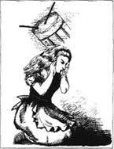
稍后，士兵跑步穿过树林，起先是三三两两的，随后是十个二十个，最后是成群成群的，似乎把整个森林都塞满了。爱丽丝躲在树后看着他们过去。
她想这些士兵真够奇特。他们总是跌倒在什么东西上。一个士兵倒下，更多的士兵就倒在他上面。片刻之间，地面上到处是倒下的人了。
后来骑兵过来了。马有四条腿，因此跑得比步兵平稳，但即使这样也经常摔倒。马一摔倒，骑士总是马上掉下来。这种局面几乎本身就像一场战斗。爱丽丝拿定主意，离开此地会更安全。不久，她来到了一个开阔地。在那儿，她看见白方国王坐在地上，忙着在笔记本上写东西。
国王一看见爱丽丝就高兴地叫嚷道：“我把士兵都派出去了，小宝贝，你走过树林时，碰见他们了吗？”
“碰上了，我想有好几千。”爱丽丝答道。
国王看了看本子，说：“共4207人。我不能把马匹都派出去，因为象棋里需要两枚马。而且我也没把黑格与哈特两位信使派去。当然，我需要他们来回穿梭送信。一个来，一个去。”
爱丽丝说：“我想我还是不明白。干吗一个来，一个去？”
国王面有愠色，说：“我告诉过你，我得有两个帮手——一个取信，一个送信。”
这时，叫黑格的那个信使来了。他长着巨手、大眼，眼珠老是左右乱转。
国王问：“城里有什么消息？”
“我悄声告诉你。”黑格凑近国王的耳朵说话。
爱丽丝也想听听城里的消息，心里有点遗憾。但突然黑格转而大叫一声：“他们又斗起来了！”
“你把这称作悄悄话？不允许再这样大嚷大叫了！”可怜的国王吓得跳了起来，浑身颤抖。
爱丽丝问：“谁又斗起来了？”
“当然是狮子与独角兽。”国王说。
“为了争夺王冠？”
“是的，他们为争夺我的王冠斗了起来！太有趣了，是不是？我们赶紧去瞧瞧！”国王说。
他们开始跑起来，一边跑着，爱丽丝一边背着一首古老的歌词：
狮子与独角兽
为王冠而格斗；
狮子打败了独角兽，
把他满城追逐。
有些人给他们白面包
有些人却布施黑面包；
有些人送上了葡萄干蛋糕
击鼓把他们送出城。
不久他们就看见前面聚集了一大群人，狮子与独角兽在圈中打斗。另一个叫哈特的信使站在人群的外围，一只手端着一杯茶，另一只手拿着黄油面包。他看上去很不高兴。
黑格凑着爱丽丝的耳朵轻声说：“他刚从监狱里出来，所以又饿又渴。你好吗，亲爱的孩子？”随后他非常友好地对哈特讲话。
哈特看了看周围，又继续吃他的黄油面包，喝他的茶。
国王喊道：“好了，告诉我们他们打斗得怎么样？”
“他们打得很顺利，每人都已被打倒了大约八十七次。”哈特说着，满嘴是黄油面包。
爱丽丝说：“那么我想他们不久就会带来白面包和黑面包的。”
“面包都准备好了。我自己先吃点儿。”哈特说。
就在这时，打斗告一段落，狮子与独角兽坐了下来，显得疲惫不堪。
国王喊叫着：“喝茶，休息10分钟！”黑格与哈特开始分发白面包和黑面包。爱丽丝拿了一片尝尝，但太干了。
“我想今天他们不会再打了。去叫人击鼓。”国王对哈特说。
在爱丽丝看着他走的当儿，她突然瞧见有人跑出树林。
她激动地说：“看呀！那是白方王后！她正飞奔出树林，那些王后跑得可真快！”
“可能有敌人追她，那树林里面多的是。”国王头也不转地说。
爱丽丝非常惊奇地问：“可是你不打算去救她？”
“没用，没用！她跑得太快了，王后跑起来你是追不上的。”国王说。
这时，独角兽路过这里，双手插在口袋里。他看见了爱丽丝，就停了下来，端详了她好几分钟。他似乎并不喜欢他所看见的这个东西。
最后他问：“这——是——什么？”
“这是个孩子！”黑格自告奋勇地上前将爱丽丝做了介绍，并说，“我们也是今天刚碰上的。她跟真小孩一样大，但比一般小孩自然大方得多！”
“我一向认为他们是些奇异的怪物。它是活的吗？”独角兽问。
黑格说：“它能讲话。”
独角兽蒙眬地看着爱丽丝说：“孩子，讲吧。”
爱丽丝笑了。“我也向来认为独角兽是种奇异的怪物。以前我从未看见过活的。”
“我们见了面，又讲了话，我们可以互相信任了，是吗？”独角兽转向国王说：“老头子，拿出葡萄干蛋糕。黑面包我吃厌了！”
国王有点怕了，忙说：“当然，当然。黑格，赶快把袋子打开。”
黑格脖子上挂一个大袋子，他从里面拿出一个很大的蛋糕，一个盘子，一把刀。他给爱丽丝递过去，要她拿着。
这时狮子来到了他们中间。他很疲劳，睡意蒙眬，双眼半睁半闭着。“这是什么？”他看看爱丽丝问。
独角兽叫道：“啊，这是什么？你永远猜不出的！我刚才也猜不出。”
狮子毫无兴趣地看着爱丽丝，无精打采地问：“你是植物，还是动物？”
没等爱丽丝回答，独角兽就叫道：“这是只奇异的怪物。”
“那就把葡萄干蛋糕给大家递过来，怪物。”狮子说着，躺了下来。“你们两位也坐下来吧。”他又对国王与独角兽说。
国王坐在狮子与独角兽之间非常不自在，但确实没有其他地方让他坐。他全身颤抖得厉害，王冠也差点掉了下来。独角兽显得很高兴，然后他便与狮子争论谁会赢得这场打斗。
狮子愤怒地问：“我满城追着你打。这怪物怎么这样久还没把葡萄干蛋糕切开？”
“切蛋糕不容易。我已切下好几块了，但它们又粘在一起了。”爱丽丝说。
独角兽说：“你不懂切镜子屋蛋糕的方法。要先递给大家，然后再切开。”
这听起来荒唐，但爱丽丝还是站起来，端着盘子转一圈，蛋糕马上把自己切成三块，然后，爱丽丝拿着空盘子回到自己的位置上。
独角兽叫道：“看看我这块蛋糕。这怪物给狮子的那块比我的大一倍。”
“她一点没给自己留。怪物，你喜欢葡萄干蛋糕吗？”狮子问。
爱丽丝还没来得及答话，鼓声就响了起来。空中满是噪音，她的头好像要被吵炸了。爱丽丝心惊胆颤，赶紧跑开，跳过了小河。
* * * * *
* * * *
* * * * *
然后她倒在地上，用双手捂住耳朵，试图挡住那震耳欲聋的噪音。
“这鼓声如果还不能把狮子与独角兽逐出城，那也就没希望了。”她心里想着。
8．The White Knight
8
The White Knight
After a while the noise of the drums slowly died away and everything became silent. Alice lifted her head and saw that she was alone, but there, lying at her feet, was the plate on which she had tried to cut the plum-cake.
'So I didn't dream the Lion and the Unicorn, then,' she said to herself. 'But ― oh dear! Perhaps we're all part of the same dream. I do hope it's my dream, and not the Red King's! I don't like belonging to another person's dream.'
At this moment there was a loud shout, and a Knight in red armour came riding through the forest towards her. Just as he reached her, the horse stopped suddenly.
'You're my prisoner!' the Red Knight cried, as he fell off his horse.
Alice was more worried for the Knight than for herself, but he got up and slowly climbed back on to his horse. He began again to say, 'You're my ―', but then another shout rang through the forest. Alice looked round in surprise.
This time it was a White Knight. He rode up to Alice and when his horse stopped, he too fell off at once. He got on again, and then the two Knights sat and looked at each other silently. Alice watched them both, feeling very puzzled.
'She's my prisoner, you know!' the Red Knight said at last.
'Yes, but then I came and saved her!' the White Knight replied.
'Well, we must fight for her, then,' said the Red Knight, and he began to put on his helmet, which was in the shape of a horse's head.
When the White Knight had got into his helmet as well, the two began fighting each other very noisily. Several times one knocked the other off his horse, but then always fell off himself. Alice got behind a tree, where she could watch more safely.
'What a noise their armour makes when they fall off!' she said to herself. 'And how calm the horses are! They just stand there like tables while the Knights get on and off!'
The battle ended when they both fell off at the same time. Then they shook hands and the Red Knight got on his horse and rode away. The White Knight came up to Alice.
'I won that battle easily, didn't I?' he said.
'I don't know,' said Alice, uncertainly. 'I don't want to be anybody's prisoner. I want to be a Queen.'
'So you will, when you've crossed the next brook,' said the White Knight. 'I'll see you safe to the end of the wood ― and then I must go back, you know. That's the end of my move.'
'Thank you very much,' said Alice. 'May I help you take off your helmet?'
It was difficult to do, but at last the helmet came off.
'Ah，that's better,' said the Knight. He pushed back his long wild hair with both hands, and turned his gentle face and large sad eyes to Alice.
He was a very strange-looking soldier, Alice thought. His armour fitted him very badly, and he had a great many things fastened to himself, and to the horse. There was also a small wooden box on his back, which was upside-down.
'I see you're looking at my little box,' the Knight said in a friendly voice. 'It's my own invention ― to keep clothes and sandwiches in. You see I carry it upside-down, and then the rain can't get in.'
'But the things can get out,' Alice said gently. 'Did you know that the top was open?'
'No, I didn't,' the Knight said. 'If all the things have fallen out,' he went on unhappily, 'there's no use keeping the box.' He unfastened it as he spoke, and put it carefully on the branch of a tree. 'Perhaps some birds will make a home in it. Now, if you're ready... What's that plate for?'
'It was used for plum-cake,' said Alice.
'I think we should take it with us,' the Knight said. 'It'll be useful if we find any plum-cake. Help me to get it into this bag.'
This took a long time to do because the bag was not really big enough and already had a lot of carrots in it. But at last it was done, and they started walking through the forest. It was a slow journey because the Knight was not a good rider. Every time the horse stopped (which it did very often), he fell off in front. When the horse went on again, he fell off behind. Sometimes he fell off sideways as well, and Alice learnt not to walk too close to the horse.
'Perhaps you should have a wooden horse, on wheels,' Alice said with a little laugh, as she helped him get back on his horse for the seventh time.
'Do you think so?' the Knight said seriously. 'Yes, I'll get one. One or two ― several.'
As they went, the Knight told her about his many inventions. Alice listened with great interest, but found most of them hard to understand. She was thinking about his invention for turning fish eyes into buttons when she saw, to her surprise, that they had reached the end of the forest.
'You are sad,' the Knight said in a worried voice. 'Let me sing you a song to cheer you up.'
'Is it very long?' Alice asked. She felt that she had heard a great many poems and songs that day.
'It's long,' said the Knight, 'but it's very, very beautiful. Everybody that hears me sing it ― either they cry, or ―' He stopped suddenly.
'Or what?' said Alice.
'Or they don't, you know. The song is called I'll tell you everything I can. It's about an old, old man that I met one summer evening long ago, while sitting on the grass.'
Years afterwards Alice could still remember very clearly those strange moments ― the Knight's gentle smile as he sang, the sunlight shining on his armour, the horse quietly moving around, and the black shadows of the forest behind.
She stood and listened very carefully, but she did not cry. It was a sad song, certainly, and as the Knight came towards the end, he seemed lost in his own sad dreams.
And now, if accidentally I put
My fingers into glue,
Or try to push a right-hand foot
Into a left-hand shoe,
Or if I drop upon my toe
A very heavy glass,
I cry, as it reminds me so
Of that old man I used to know ―
Whose face was kind, whose voice was slow,
Whose hair was whiter than the snow,
Who shook his body to and fro,
And whispered words both sad and low ―
That summer evening long ago,
While sitting on the grass.
As the Knight sang the last words, he began to turn his horse round to go back into the forest.
'You've only a little way to go,' he said, 'down the hill and over the brook, and then you'll be a Queen.'
'Thank you very much for coming so far,' said Alice, 'and for the song ― I liked it very much.'
'I hope so,' the Knight said worriedly, 'but you didn't cry very much.'
They shook hands, and then the Knight rode slowly away into the forest. Alice stood and watched him for a while.
'It won't be long before he falls off again,' she said to herself. 'Yes ― there he goes! Right on his head as usual! But he doesn't seem to mind a bit.'
When he had gone, Alice turned and ran down the hill. 'Now for the last brook, and to be a Queen! How grand it sounds!' A few steps brought her to the edge of the brook.
'The Eighth Square at last!' she cried, as she jumped over and sat down to rest on the soft green grass. At once she felt something very heavy on her head. 'What is this on my head?' she said. 'And how did it get there?' She lifted it off, to see what it was.
It was a golden crown.
die away become faint or weak. 渐渐消失，逐渐减弱。
silent adj. quiet, free from noise. 寂静的。
belong to be owned by. 属于。
armour n. defensive covering, usu. metal, for the body worn in fighting. 甲胄，盔甲。
save v. make or keep safe. 援救，搭救。
put on clothe oneself with 穿上，戴上。
helmet protective head-covering worn by soldiers. 头盔。
shake hands grasp one's hand as a greeting or to express agreement, etc. 握手。
upside-down adj. with the upper side underneath. 倒置的。
invention n. some thing new that you have made yourself. 发明。
sandwich n. two, or more slices of bread with meat, jelly, cheese, etc., between them. 三明治。
branch n. part of a tree growing out from the trunk. 树枝。
carrot n. a type of plant with a fairly long orange-red pointed root. 胡萝卜。
journey n. a trip of some distance, usu. by land. 旅行。
sideways adv. toward, from the side. 斜着，斜向一边地。
seriously adv. thoughtfully, gravely. 严肃地。
hard adj. difficult, not easy. 困难的。
turn into change in nature. 改变性质。
cheer sb. up fill with gladness, high spirit. 使某人充满欢喜，高兴。
either... or... one or the other of two. 不是……就是。
be lost in sth. be deeply occupied or fill with, e.g. thought. 沉浸在……（思想）中。
glue n. sticky substance. 胶。
toe n. one of the five end parts of the foot. 脚趾。
to and fro backwards and forwards. 往返地，来回地。
as usual as has happened before. 像往常一样。
mind v. feel sorry or troubled. 介意。
lift off to raise to a higher position and take off. （将王冠）摘下。
golden adj. made of gold. 金的。
白衣骑士
8．白衣骑士
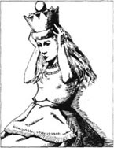
过了一会儿，鼓声慢慢消失，万籁俱寂。爱丽丝抬头发现自己孤身一人，脚边是刚才她要在上面切葡萄干蛋糕的那个盘子。
她自言自语地说：“那么我没梦见狮子与独角兽。可是——我的天！可能我们都是同一个梦境的一部分。我真的希望那是我的梦境，而不是红方国王的！我不喜欢成为其他人的梦中物。”
这时传出了一声喊叫，一位身披红色铠甲的骑士骑马穿过森林向她冲来。马突然在她前面停了下来。
“你是我的阶下囚！”红衣骑士喊叫起来，同时从马上摔了下来。
比起她自己，爱丽丝更为骑士担心，但他站了起来，慢慢地重新跨上马。他又说：“你是我的——”，但此时又一声喊叫传遍森林。爱丽丝惊奇地四处张望。
这次来的是一个白衣骑士。他骑马来到爱丽丝面前，马一停步，他也即刻摔了下来。他又骑了上去，然后两位骑士骑在马上面面相觑。爱丽丝看着他们两个，心里迷惑不解。
红衣骑士最后说：“她是我的囚犯！”
“没错，但后来我来搭救了她！”白衣骑士回答道。
“那我们得为她打一仗。”红衣骑士说着，他开始戴上头盔，头盔形状像马头。
白衣骑士也戴上了头盔，俩人就杀声震天地对打起来。一方把对方摔下马好几次，胜方总是同时也摔了下来。爱丽丝跑到树后，在那儿，她可以更安全地观看这场战斗。
她自言自语地说：“骑士摔下马时，他们的铠甲发出的声音可真响！但是，马儿却毫无声响！骑士跨上跨下，他们总是站在那儿像桌子一样，纹丝不动。”
俩人同时坠地，战斗也到此结束。然后他们握手言和，红衣骑士上马走了。白衣骑士向爱丽丝走过来。
他说：“我很轻松就赢得了那场战斗，不是吗？”
“这我不清楚，我不想做任何人的囚犯，我要当王后。”爱丽丝犹豫地说。
白衣骑士说：“当你跨过了下一条小河的时候，你会的。我将护送你安全抵达树林的尽头——然后我必须返回。那是我最后的一步。”
“多谢，多谢！我可以帮你摘下头盔吗？”爱丽丝问。
摘下头盔并不容易，但最后终于成功了。
“啊，这就舒服多了。”骑士说着，双手往后梳了梳自己的又长又乱的头发，他面色温和地转向爱丽丝，那双大眼睛看上去很忧伤。
爱丽丝想，这个士兵的样子非常怪异。铠甲一点也不合身，身上、马上都捆绑了好多东西，背上还有个倒放着的小木箱。
骑士友好地说：“我知道你在看着我的小木箱。这是我自己的发明创造——用来放衣服、三明治的。你看我倒放在背上背着，那是为了防止雨水漏进去。”
“但这样东西会掉出来，你知道盖是开着的吗？”爱丽丝轻声地说。
骑士说：“这我不知道。”他不高兴地又说，“如果里面的东西都掉出来了，那留着箱子就没用了。”他说着就卸下了箱子，小心地把它放在树枝上。“也许鸟儿可以在里面做个巢，哦，你如果准备好了……那盘子是干什么用的？”
爱丽丝答道：“那是用来盛葡萄干蛋糕的。”
“我想我们应该把它带上。如果我们找到葡萄干蛋糕，那就派上用场了。帮我把它放进袋子里。”骑士说。
放盘子用了很多时间，因为袋子太小，而且里面已装了许多胡萝卜。但最后终于放下了。他们就开始穿越森林。骑士骑马技术不好，因此速度很慢。每次马儿一停下来（马儿经常停顿），他就从前头摔下来。等马又继续走时，他又从后头摔下来。有时也从旁边摔下来，爱丽丝记住了走路不能同马靠得太近。
“也许你应该备匹有轮子的木马。”爱丽丝第七次把他扶上马时笑着对他说。
骑士严肃地说：“这是你的想法吗？确实，我要买一匹。一匹或两匹——几匹。”
在路上，骑士给她讲他的许多发明。爱丽丝很有兴致地聆听着，但觉得这些发明大多数难以理解。她正考虑着他把鱼眼睛变成纽扣的发明时，突然出乎意料地看见他们已抵达了森林的尽头。
骑士焦虑地说：“你情绪低落，我唱支歌，让你高兴起来。”
“歌很长吗？”爱丽丝问。她觉得那天她听到的诗、歌已够多了。
骑士说：“很长，但非常非常动听。每个人只要一听见我唱起来，不是哭就是——”他突然停住了。
“就是什么呢？”爱丽丝问。
“就是不哭。这支歌名叫‘我要告诉你我所知道的一切’，讲的是很久以前一个夏日夜晚，我坐在草地上遇见的一个年岁很高的老人。”
事隔多年，爱丽丝还能够清楚记得那个奇怪的时刻——骑士唱歌时慈祥的笑容，铠甲上闪耀的太阳光，马儿静静地转悠，以及身后长长的树林的影子。
她站在那儿仔细地听，但没有哭。那当然是首悲伤的歌。骑士走到森林尽头时，他似乎沉浸在他自己的凄凉梦境之中。
而今，如果我碰巧把
手指伸进胶中，
或者把右脚
塞进左脚的鞋里，
或者把一个大玻璃杯
砸到了自己的脚趾上，
我会哭，因为这使我想起
那个曾经认识的老人——
他有慈祥的面容，讲话慢悠悠，
他的头发雪白，
身子颤巍巍，
讲话低沉，语调悲凉——
那是久远的一个夏日黄昏，
我坐在草地上。
骑士唱完最后一句，开始掉转马头，回到森林里面。
他说：“你下山跨过小河，只需走一小段路就能做王后了。”
“非常感谢你护送我到这儿，也谢谢你的歌——我很喜欢。”爱丽丝说。
骑士不无焦虑地说：“我希望如此，但你并没有哭啊。”
他们握了手，然后骑士就慢慢地骑马走回森林。爱丽丝站在那儿，目送他一会儿。
她心想，“过不多久，他又要摔下来了。不错，又来了！像往常那样，又一头栽下来！但他似乎一点也不在意。”
他背影一消失，爱丽丝转身跑下山去。“现在只要跨过这最后一条小河，就做王后了！多快乐啊！”几步她就来到了小河边。
“终于到达了第八格！”她跳过小河坐在了一片毛茸茸的青草地上，叫道，突然她感觉头上戴了个沉重的东西。“头上是什么？哪儿来的？”她问道，同时把它摘了下来，看个明白。
那是一顶金冠。
9．Queen Alice
9
Queen Alice
'Well, this is grand!' said Alice. She got up and walked around for a while, but the crown felt very heavy and strange, so she sat down again. Then she noticed that the Red Queen and the White Queen were now sitting on either side of her. How they had got there, she had no idea. But she was not at all surprised. Nothing could surprise her now in the looking-glass world.
'Now I am a Queen,' said Alice, 'does this mean that the game of chess has finished, or ―'
'Speak when you're spoken to!' the Red Queen said. 'Think before you speak, and write it down afterwards.'
'But I only ―' Alice began.
'And you can't be a Queen,' the Red Queen went on, 'until you've done your lessons.'
'Are you good at sums?' the White Queen asked. 'What's one and one and one and one and one and one and one?'
'I don't know,' said Alice. 'I lost count. But why ―'
'She can't do sums,' said the Red Queen. 'What about languages? And can you read?'
'Of course I can read!' Alice said. 'And I know a little French, but I really don't see why ―'
'It's clear,' said the White Queen, shaking her head sadly, 'that she wants to argue about something, but she doesn't know what to argue about!'
Alice decided it would be safer to say nothing, and for a while there was silence. Then the Red Queen said to the White Queen, 'I invite you to Alice's party this afternoon.'
'And I invite you,' the White Queen replied. 'But I must have a rest first,' she went on. 'I am so sleepy.'
'And so must I,' said the Red Queen. She looked at Alice. 'You can sing to us, to help us sleep.'
Then the two Queens put their heads against Alice's shoulders. In a moment they were both asleep, and snoring loudly.
After a while the snoring seemed to change and began to sound almost like music. Alice thought that she could even hear some words. She listened hard, and suddenly she found that the Queens had disappeared, and she was standing in front of a tall and very grand-looking doorway. Above the door were the words QUEEN ALICE in large letters.
Alice knocked, and the door flew open. There seemed to be hundreds of voices singing, and Alice could now hear the words very clearly. They went like this:
Then fill up the glasses with everything nice,
And cover the table with buttons and rice.
Put cats in the coffee, and salt in the tea ―
And welcome Queen Alice with thirty-times-three!
'I suppose I should go in,' Alice said to herself. So in she went, and at once everyone in the hall became silent.
As she walked down the long hall, she saw that there were animals, birds, and even a few flowers among the crowd seated round the table. At the top there were three chairs; the Red and White Queens had taken two of them, but the middle one was empty. Alice sat down, feeling a little uncomfortable and wishing that someone would speak.
At last the Red Queen began. 'You've missed the fish. Bring the meat now!' And at once the waiters put a large joint of meat in front of Alice.
But before she could begin to cut up the joint, the Red Queen spoke again. 'Let me introduce you to the joint,' she said. 'Alice ― Meat. Meat ― Alice.'
The joint of meat then stood up on the plate and curtsied to Alice. Alice, feeling both frightened and amused, picked up the knife and fork. 'May I give you some meat?' she said, looking from one Queen to the other.
'Certainly not!' the Red Queen said. 'It isn't polite to cut anyone you've been introduced to. Take away the joint!'
The waiters immediately carried away the joint, and brought a large plum-pudding in its place.
'Please don't introduce me to the pudding,' said Alice quickly, 'or we shall get no dinner at all.'
But the Red Queen said loudly, 'Pudding ― Alice. Alice ― Pudding. Take away the pudding!' And the waiters took it away at once.
Then Alice decided to give an order herself. 'Waiter! Bring back the pudding!' When the pudding appeared again, she quickly cut off a piece and gave it to the Red Queen.
'That's really friendly!' said the Pudding. 'How would you like someone to cut a piece out of you?'
Alice was too surprised to speak.
'Say something,' said the Red Queen. 'You can't leave all the conversation to the pudding!'
By this time the party was beginning to get very noisy, and more and more strange things were happening. Bottles and plates were now walking around on the table, arm in arm, and the White Queen began to whisper in Alice's ear a long poem about fishes. Then the Red Queen screamed at the top of her voice, 'Let's drink to Queen Alice's health!'
Some of the animals put their glasses upside-down on their heads, others got inside them or knocked them over on the table. The forks began to dance with the spoons, and the noise got wilder and wilder. The White Queen said in Alice's ear, 'You must stand up and give thanks now, you know.'
Alice stood up. 'I must stop all this!' she cried, and she took hold of the table-cloth with both hands. One good pull, and everything came crashing down on the floor.
'And now for you!' she went on, turning to the Red Queen, who had suddenly become very much smaller and was running around on the table. 'You started all this trouble, and I'll shake you into a kitten! Yes, I will!'
idea n. conception. 观念。have no idea, don't know. 不知道。
finish v. bring or come to an end. 结束，完成。
good at skillful, having the ability to do something. 擅长。
sums n. adding numbers together. 算术。good at sums. 擅长算术。
language n. human speech, spoken or written. 语言，文字。
sadly adv. unhappily. 忧愁地，悲伤地；遗憾地
invite v. ask. 恳请，邀请。
in front of prep 在……的前面。
grand-looking adj. large and of fine appearance. 雄伟的，壮丽的。
large adj. of great size. 大的。
hundreds of 数以百计的。
miss v. fail to meet. 错过。
waiter n. man who waits at table. 侍者，男侍
joint of meat a large piece of meat (shoulder, leg). 腿肉或肩膀肉，大片肉。
pudding n. sweet food that you eat at the end of a meal. 布丁。plum-pudding. 干果布丁。
take away remove. 拿走。
order n. a request to supply sth. 定单。give an order for some food. 点菜。
drink to wish good (to sb.) while raising one's glass. 举杯祝贺（某人）。
take hold of grasp. 抓住。
good a. complete, thorough. 彻底的，痛快的。
爱丽丝王后
9．爱丽丝王后
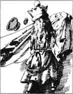
“啊，多高贵！”爱丽丝说。她站起来，来回走了一会儿，但王冠太重，戴着不自在，她重又坐下。然后，她发现红方王后与白方王后正坐在她两边。她不知道她们怎么会坐在这儿的。但她一点儿也不奇怪。现在镜中世界的一切对她来说都是不足为奇的。
爱丽丝说：“现在我是王后了，这是否意味着象棋游戏就到此为止了，或者——”
“有人跟你讲话，你才讲，讲话前要先思考，过后再记下来。”红方王后说。
“但我只是——”爱丽丝开口说。
红方王后又说：“直到你学好功课，你才能当王后。”
“你擅长算术吗？1加1加1加1加1加1加1总共得多少？”白方王后问。
爱丽丝答：“我不知道。我算不清。但为什么——”
“她做不了算术，语言能力怎样？能读书吗？”红方王后问。
爱丽丝答道：“我当然会读书，我还懂点法语，可是我真的不明白为什么——”
“显然她想争辩点什么，但不清楚想争辩些什么！”白方王后遗憾地摇摇头说。
爱丽丝判定一言不发更保险。有一会儿，大家都不吭声。随后，红方王后对白方王后说：“我邀请你参加今天下午爱丽丝的聚会。
白方王后答道：“我也邀请你去。但我得先休息一下。”她又补充了一句说，“我太困了。”
“我也同样。”红方王后说。她看着爱丽丝，“你可以给我们唱歌，帮助我们入睡。”
然后，两个王后把头都靠在爱丽丝的肩膀上。一会儿，她们就睡着了，鼾声如雷。
过了片刻，鼾声似乎变了声调，听起来几乎成了音乐。爱丽丝认为她甚至可以听出一些歌词。她用心地听，突然发现两个王后不见了，自己站到了雄伟壮观的一个门廊前。门上方写着“爱丽丝王后”几个大字。
爱丽丝敲了敲，门突然打开了。里面似乎有成百的声音在歌唱，爱丽丝歌词听得很清楚。歌词是这样的：
让玻璃杯充满一切好东西，
让桌子摆满纽扣和米饭。
把猫放入咖啡，给茶加点盐——
热烈欢迎爱丽丝王后的到来。
爱丽丝对自己说：“我想我应该进去了。”她走了进去，顿时大厅里一片寂静。
她走过长长的大厅时，围坐在桌旁的人群中还有动物、飞鸟，甚至还有几种花。上座的地方摆着三张椅子，红白王后占了两个位置，中间一个空着。爱丽丝坐了下来，但感到有点拘束，希望有人发言。
红方王后终于开口了。“你没赶上吃鱼。现在上肉！”男侍即刻把一大块腿肉放在爱丽丝前面。
未等她切开腿肉，红方王后又讲了：“让我把你介绍给腿肉，”她说，“爱丽丝，这位是肉。肉，这位是爱丽丝。”
于是，腿肉在盘里站立起来，向爱丽丝行屈膝礼。爱丽丝拿起刀叉，心里感到既恐惧又好玩，目光从一个王后转到另一个王后，问：“我可以给你们分些肉吗？”
红方王后说：“当然不行！把刚刚介绍认识的人切了是不礼貌的，把腿肉拿走！”
男侍马上把腿肉拿走，换上了一个大干果布丁。
爱丽丝抢着说：“请别做介绍了，否则我们晚餐就什么也没有了。”
但红方王后还是大声说道：“布丁，这位是爱丽丝。爱丽丝，这位是布丁。把布丁拿走！”男侍又马上把它拿走了。
然后，爱丽丝决定自己下个命令，“男侍！把布丁拿回来！”布丁一端上来，她就快速地切下一块递给红方王后。
布丁说：“你太友好了！有人从你身上切下一块，你感觉怎样？”
爱丽丝惊讶得说不出话来。
红方王后说：“讲几句吧。谈话中你不能让布丁唱独角戏。”
这时，聚会开始喧闹起来，怪事接连不断地出现。瓶子、盘子在桌上手挽着手行走，白方王后开始凑着爱丽丝的耳朵背一首有关鱼的长诗。然后，红方王后声嘶力竭地喊道：“咱们为爱丽丝王后的健康干杯！”
有些动物把杯子倒放在头顶，还有些钻到杯子里面去，或者把它们打翻在桌上。又开始同勺跳起舞来，暄闹声越来越响。白方王后冲着爱丽丝的耳朵说：“你现在必须站起来答谢各位了。”
爱丽丝站了起来。“我必须让这喧哗声停住！”她叫道，她双手抓住桌布，狠狠地一拉，桌上的东西统统砸到了地上。
“现在轮到你了！”她转向红方王后又说。红方王后这时突然变小，并在桌上乱窜。“你是这场混乱的罪魁祸首，我要把你摇晃成只小猫！是的，我会的！”
10．Shaking
10
Shaking
She took the Red Queen off the table as she spoke, and shook her backwards and forwards, very hard.
The Red Queen did not try to fight or escape... but her face grew very small, and her eyes got large and green... and, as Alice went on shaking her, she grew shorter ― and fatter ― and softer ― and rounder ― and...
backwards and forwards to and fro. 来回地，往返地。
escape v. get away. 逃走
grow v. become. 变成，逐渐。
摇晃
10．摇 晃
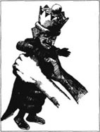
她说着，便把红方王后从桌上拿起来，用力地前后摇晃起来。
红方王后并没有试图自卫或逃跑……但她的脸变得很小，眼睛变大变绿……爱丽丝不停地摇晃着，她又变得更矮——更胖——更软——更丰满——更……
11．Waking
11
Waking
... and it really was a kitten, after all.
苏醒
11．苏醒
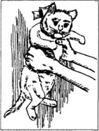
……那竟然就是只小猫。
12．Who dreamed it?
12
Who dreamed it?
'You shouldn't be so noisy, Your Majesty,' Alice said to the black kitten. 'You've woken me out of a very nice dream. I've been all through the looking-glass world. And I think that you were the Red Queen, weren't you?'
It is impossible to guess if a kitten is saying 'yes' or 'no'. Alice looked among the chessmen on the table until she found the Red Queen. Then she sat on the carpet and put the kitten and the Queen to look at each other.
'Curtsy while you're thinking what to say,' Alice said, with a little laugh. 'It saves time, remember!'
But the kitten turned its head away and wouldn't look at the Queen.
'Now, Kitty,' Alice went on, 'who was it who dreamed it all, do you think? No, listen ― don't start washing your paws now. You see, Kitty, it was either me or the Red King. He was part of my dream, of course ― but then I was part of his dream too! Was it the Red King, Kitty?'
But the kitten began to wash its other paw, and pretended it hadn't heard the question.
Who do you think was dreaming?
wake vt. cause to stop sleeping. 打断睡眠，吵醒。
dream sth. which one seems to see or experience during sleep. 梦。
impossible adj. not possible. 不可能的。
carpet n. a heavy woven fabric for covering floors and stairs. 地毯。
paw n. the foot of a cat or kitten. 猫爪。
pretend v. to give an appearance of (sth. that is not true), with the intention of deceiving. 假装。
谁做的梦？
12．谁做的梦？

爱丽丝对黑猫说：“你不该这么吵，陛下，你把我从一个美梦中吵醒。我已漫游了整个镜中世界。我想你是红方王后，不是吗？”
要揣测小猫的回答是“是”，还是“否”是不可能的。爱丽丝看着桌上的棋子，直到她找到了红方王后。然后她坐在地毯上，把小猫与王后摆在一起，互相对视。
“考虑话题时要行个礼。别忘了，这样会节省时间！”爱丽丝微笑了一下说。
但小猫扭转了头，不愿正面看王后。
爱丽丝接着说：“好了，小猫，你认为是谁做了这一场梦？不，听着——现在别洗爪子了。小猫你也清楚，不是我就是红方国王。他当然是我梦中的一部分——然而，我也是他梦中的一部分！是红方国王吗，小猫？”
但小猫开始洗另一只爪子，装作没听见。
你以为是谁做了这个梦？
Exercises
Exercises
A Checking your understanding
Chapters 1―2 Who or what in these chapters...
1 ... turned into a kind of cloud?
2 ... were walking around by the fireplace, arm in arm?
3 ... turned cold to the very ends of his hair?
4 ... first spoke to Alice in the garden?
5 ... did Alice most want to be in the game of chess?
6 ... will show Alice the way through the forest?
Chapters 3-5 How much can you remember? Check your answers.
1 What didn't Alice have on the train?
2 What did Alice forget in the wood where things have no names?
3 What did the Walrus and the Carpenter do to all the Oysters?
4 Who was the Red King dreaming about?
5 Who could believe six impossible things before breakfast?
6 What did Alice decide to buy in the shop?
Chapters 6-7 Are these sentences true (T) or false (F)?
1 Humpty Dumptys's belt was a birthday present.
2 Alice found Humpty Dumpty's poem hard to understand.
3 Haigha and Hatta were fighting for the White King's crown.
4 The Unicorn thought that Alice was a fantastic monster.
5 Alice cut up the plum-cake, then passed it round.
Chapters 8-12 Find answers to these questions in the text.
1 Why was it a slow journey through the forest?
2 Why did the White Knight want to sing Alice a song?
3 How did Alice know that she had become a Queen?
4 Who was Alice introduced to at her party?
5 What happened when Alice picked up the Red Queen and shook her?
6 Whose dream do you think it was?
B Working with language
1 Use these linking words to complete the passage.
so which and but when because
The White Knight carried a small wooden box on his back,... he kept clothes and sandwiches in. He carried it upside-down... he didn't want the rain to get in,... Alice told him that the top was open,... all the things inside had fallen out... he heard this, the Knight unfastened the box... put it on the branch of a tree.
2 Complete these sentences with information from the story.
1 The Red Queen and Alice ran very fast indeed, but...
2 The White Queen didn't scream when she cut her finger because...
3 Alice's party became very wild and noisy, so Alice...
C Activities
1 Which are your favourite and your least favourite characters in this story? Why? Write a few lines to describe each of them.
2 Which part of Alice's dream do you think is the strangest? Imagine you are Alice, and write to a friend, describing that bit of the dream.
3 Here is a poem like Humpty Dumpty's. Use the words below to complete the poem, and then try to write one yourself, about the seasons, or perhaps the days of the week.
fire gold sun leaves day year night clouds fields
In spring, when mountains lose their snow,
I like to watch the flowers grow.
In summer, when the... is bright,
I walk through... and woods till...
In autumn, when the... turn...
I know the... is grouping old.
In winter, when the... are grey,
I sit beside the... all...
Glossary
beetle
a kind of insect, with hard, shiny wings
believe
to think that something is real or true
brook
a very small, narrow river
certain
sure
chess
a game for two people, with little pieces on a board of black and white squares; the chess pieces are called kings, queens, bishops, knights, castles, and pawns
crow
a large black bird
curtsy
to bend your knees politely to someone, e.g. a queen
hedge
a line of small trees and bushes growing close together
insect
a very small kind of animal with six legs, e.g. a fly
invention
something new that you have made yourself
jam
a sweet food, made by cooking fruit and sugar
maid
a woman or girl who works in another person's house
Majesty
you say 'Your Majesty ' when you speak to a queen or king
messenger
somebody who carries messages
monster
a very strange, sometimes frightening, person or animal
nonsense
silly or stupid talk or ideas
paw
the foot of a cat or kitten
pudding
sweet food that you eat at the end of a meal
puzzled
not understanding something
snore
to make a loud noise while you are asleep
sums
adding numbers together, e.g. 2 and 2 is 4
whisper
to speak very softly and quietly
Jabberwocky
The words in the poem on page 8 were invented by Lewis Carroll, and are not real English words. So they can mean what you choose them to mean.
封底
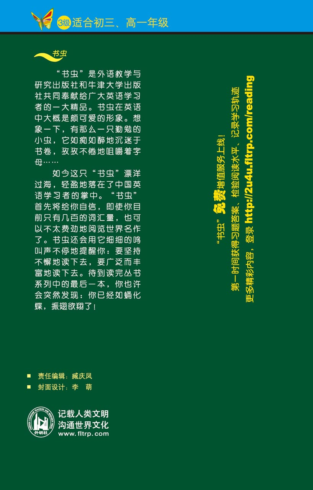